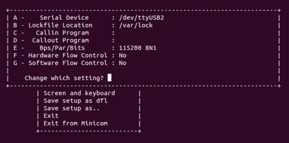
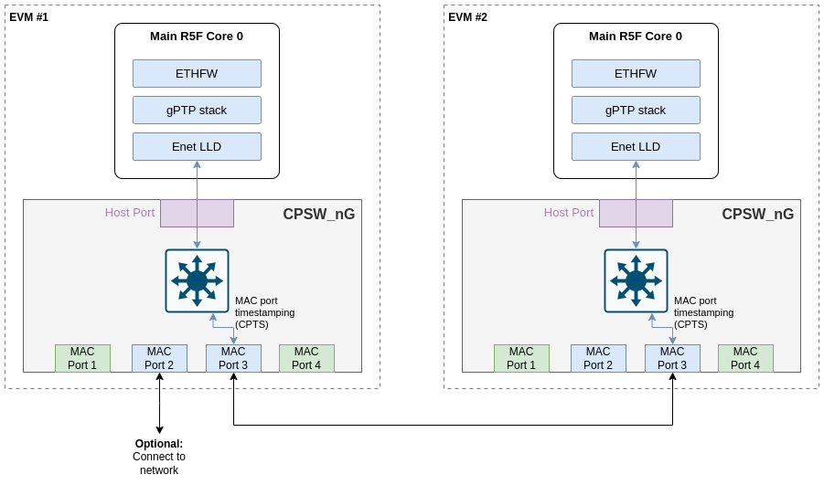
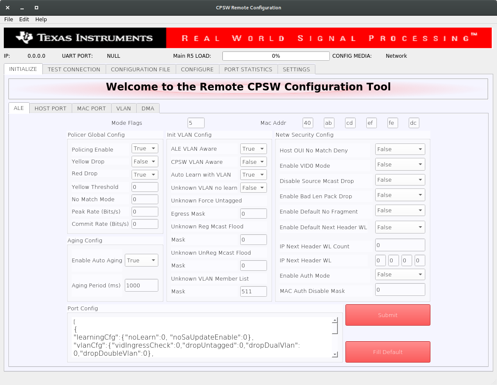
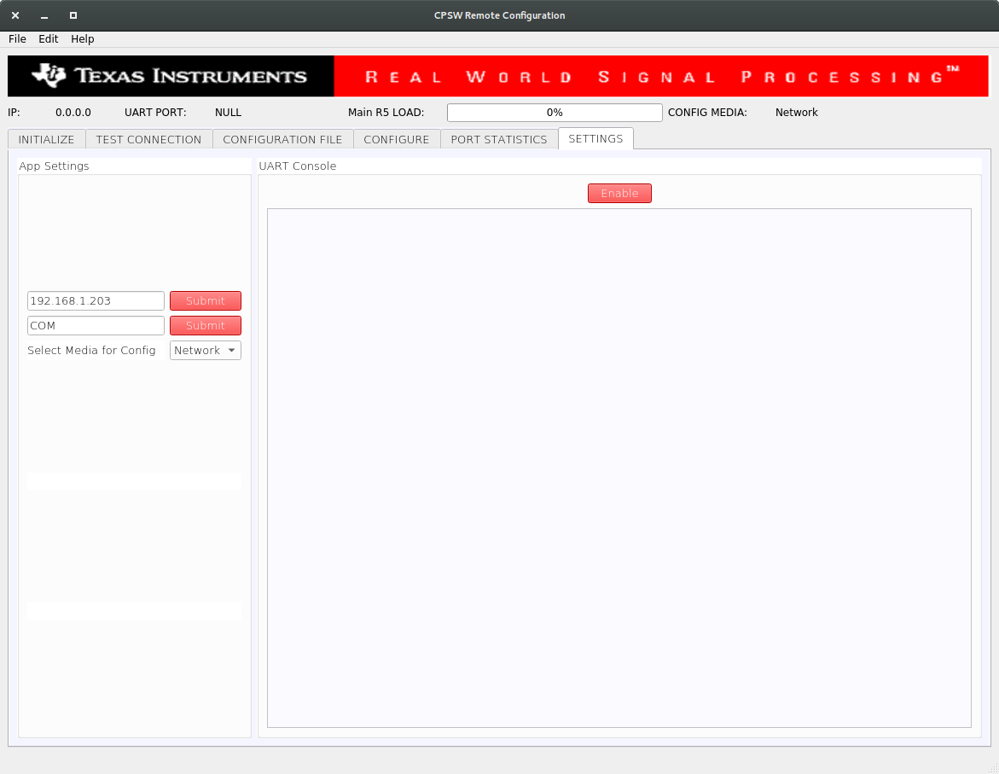
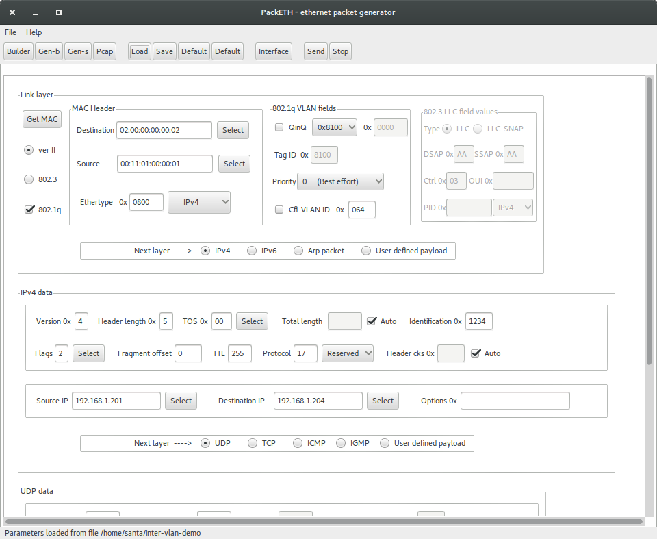
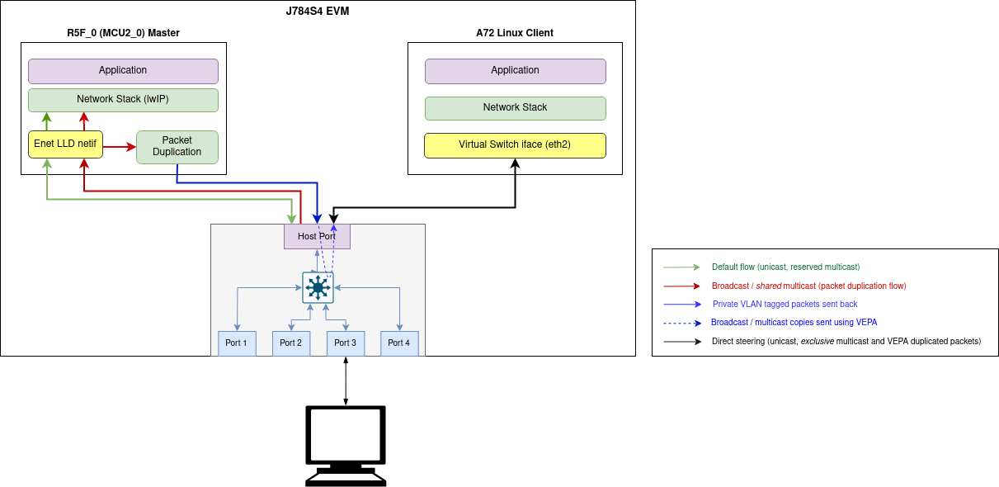
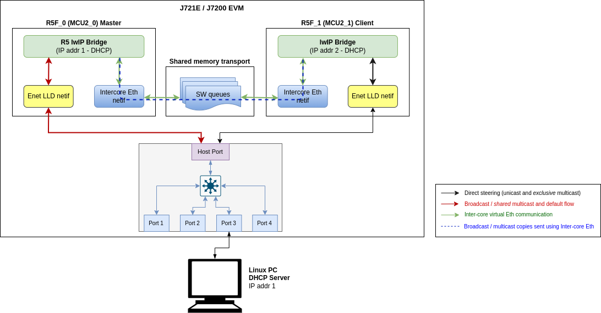
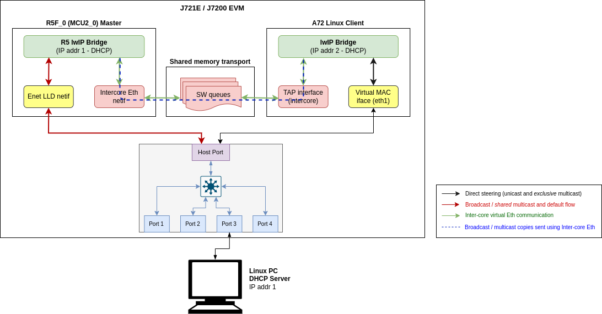
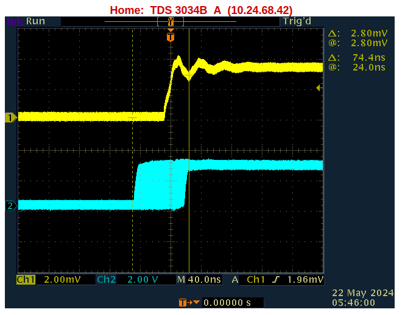
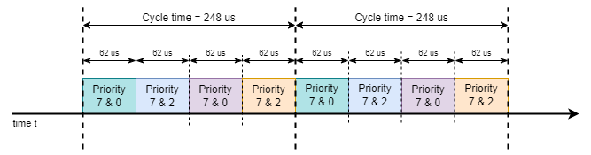

Introduction
The applications that are part of this demo show Jacinto 7 integrated switch differentiating features like interVLAN routing in hardware, firewall, packet header based classification and rate limiting along with Layer-2 switching with VLAN, multicast and software-based interVLAN routing among the ports. The traffic forwarding process among the ports don't require CPU involvement or DMA bandwidth as everything is completely handled by CPSW hardware.
The intention behind this demo which encompasses multiple sub-demos is to show the switching capabilities of the J721E/J7200 integrated Ethernet Switch (CPSW9G or CPSW5G) as well as the software developed which includes Enet low-level driver (Enet LLD), lwIP TCP/IP integration and Ethernet Switch Firmware (EthFw) application.
Below are top-level features demonstrated:
- Basic L2 switching
- Switching with VLAN
- Multicast switching
- Send/receive packets over TCP/UDP
- Support for remote cores (Linux and FreeRTOS)
- Software-based interVLAN routing
- Hardware-based interVLAN routing
- IP next header filtering
- MAC address based rate limiting
- Time-synchronization using gPTP
- Multi-core time-synchronization with RTOS client
- Software based inter-core virtual Ethernet communication
- Enhance Schedule Traffic support demo
- PPS generation
The Ethernet Firmware demo application is in charge of:
- Opening the CPSW modules like ALE, MAC ports, host port and UDMA
- Opening and configuring the MAC ports along with corresponding PHYs present in the GESI expansion board at RGMII/RMII 1Gbps mode in J721E EVM, or the QpENet expansion board in J7200 EVM.
- Initializing lwIP stack
This application runs with the GESI (Gateway/Ethernet Switch/Industrial Expansion Board) board on J721E EVM and with the QPENet (Quad Port Eth Expansion Board) board on J7200 EVM. The demo requires two PCs running Ubuntu connected to the GESI or QPEnet board in order to demonstrate the L2 switching capabilities as well as to generate and monitor Ethernet traffic at different stages of the demo. The connection diagrams for the respective EVMs are shown below.
Connection diagram for J721E EVM with GESI Daughter Card
Connection diagram for J7200 EVM with QpENet Daughter Card
Connection diagram for J784S4 EVM with QpENet Daughter Card
Note: The IP addresses shown in above diagram are only for example and can change based on your network configuration.
A GUI-based control interface to enable/disable/configure features like VLAN, multicast, rate limiting, interVLAN routing and also to show the load of the CPU is added in the release.
A Remote Client application for the Main R5F core 1 is also available as part of this demo. This application runs a local lwIP stack on a virtual network device which demonstrates the RTOS switch remote core integration.
Dependencies
This application depends on multiple components and are detailed in sections below:
- FreeRTOS: Uses Task, Semaphore, Interrupt Handling HWI.
- PDK
- Board library: Required for the configuration of pin muxing, clocking, etc.
- OSAL library: Provides the abstraction layer implementation for TI RTOS
- UART driver: Required to print output messages to serial port
- GPIO driver: Required to drive PHY reset lines and I/O mux switch
- UDMA driver: Required for global level initialization of the UDMA driver
- Enet driver: Provides an interface for the application to configure the control path of the CPSW switch, as well as the interface to send and receive Ethernet frames to/from CPSW's host port
Back To Top
Compile Time Configurations
Ethernet Firmware Demos Configuration
Starting in SDK 9.0 release, the default Ethernet Firmware standalone RTOS application no longer enables the following demos: GUI configurator tool, hardware and software interVLAN, IP next hader filtering and rate limiting.
User must recompile ETHFW in order to enable these demos:
make ethfw_all BUILD_SOC_LIST=<SOC> ETHFW_DEMO_SUPPORT=yes
Note: With ETHFW_DEMO_SUPPORT enabled Ethernet Firmware will require 1 more TX channel for SW interVLAN with respect to base resource utilization count. Refer to resource_utilization for base resource utilization. Hence in this case Ethernet Firmware on Main R5F 0 Core 0 will have 3 Tx channel allocated to it and Linux remote client on A72 core will have only 2 Tx channel allocated to it (i.e. 1 for each virtual port).
Back To Top
Demo Setup
Prerequisites
packETH tool
Note: packETH tool is required only in PC 1.
Install packETH packet generator tool on the Linux PC. The Ubuntu installation instructions can be found in their website.
The packEth configurations used in this demo are included in the Ethernet Firmware package at <ETHFW_PATH>/docs/packeth_configurations/
Note: Please check licensing information and terms of usage of packETH tool and make sure it adheres to your organization's policy before using and configuring it.
Python3 and Pip3
The CPSW Remote Configuration GUI tool is developed using Python3 and PyQt. Pip3 can be used to install additional Python modules required by the GUI tool.
Note: The GUI tool can be executed from either PC 1 or PC 2, so Python and its dependencies must be installed only on the selected PC.
Install Python3, PyQt, pip3 and other dependencies:
sudo apt install python3-pip
pip3 install --user pyqt5
sudo apt-get install python3-pyqt5
sudo apt-get install pyqt5-dev-tools
sudo apt-get install qttools5-dev-tools
pip3 install jsonschema pyserial serial xmodem
Wireshark
Note: Wireshark packet analyzer tool is required in both PC 1 and PC 2.
Refer to the Wireshark installation instructions on Ubuntu in this website.
iperf
Note: iperf network performance measurement tool is required on either PC 1 or PC 2.
Install iperf in the selected Ubuntu PC(s):
sudo apt-get install iperf
bmon
Note: bmon is required only on PC 2.
bmon is a network bandwidth monitoring tool that will be used in this demo to monitor the traffic received on PC 2 during the interVLAN tests.
Install bmon in the Ubuntu PC as follows:
sudo apt-get install bmon
After installing bmon, enable promiscuous mode on the network interface using,
sudo ifconfig eth0 promisc
This is required to capture VLAN tagged packets in the PC. Since fixed VLAN tags, IP & MAC addresses are used in the demo, PC's network interface will drop these packets as they are not addressed to it. To avoid this, promiscuous mode should be enabled on the network interface.
DHCP Server
Note: DHCP server is required only in PC 1.
A DHCP server is required to assign IPs dynamically to all internal cores (A72, Main R5F core0, Main R5F core1) or external devices (PC 1, PC 2) in this demo.
- Refer to the DHCP installation and setup instructions on the Ubuntu website for further details.
- A possible configuration could be:
subnet 192.168.1.0 netmask 255.255.255.0 {
range 192.168.1.200 192.168.1.210;
...
}
- Set the PC 1 IP to
192.168.1.<pc1> and the restart the DHCP server.
Static IP (Optional)
If dynamic IP configuration is not possible, static IPs can be setup as follows:
For Ethernet Firmware server, set below flag in ethfw/apps/app_remoteswitchcfg_server/main.c to disable DHCP and use static IP instead:
#define ETHAPP_LWIP_USE_DHCP (0)
The static IP address, gateway and netmask can be set also in the same file.
#define ETHFW_CLIENT_IPADDR(addr) IP4_ADDR((addr), 192,168,1,201)
#define ETHFW_CLIENT_GW(addr) IP4_ADDR((addr), 192,168,1,1)
#define ETHFW_CLIENT_NETMASK(addr) IP4_ADDR((addr), 255,255,255,0)
For RTOS client application, set below flag in ethfw/apps/app_remoteswitchcfg_client/main.c:
#define ETHAPP_LWIP_USE_DHCP (0)
The static IP address, gateway and netmask can be set also in the same file.
- For Linux,
sudo ifconfig <ethDeviceName> 192.168.1.x netmask 255.255.255.0 up
- For Windows, refer to the following website for suggested instructions about static IP configuration under a Windows environment.
| Device | IP address |
| PC 1 | 192.168.1.202 |
| J721E/J7200/J784S4/J742S2 Main R5F core (running EthFw) | 192.168.1.203 |
| PC 2 | 192.168.1.204 |
| J721E/J7200/J784S4/J742S2 A72 core (virtual net driver) | 192.168.1.205 |
| Default Gateway | 192.168.1.1 |
| Subnet Mask | 255.255.255.0 |
Note: Make sure that all IPs assigned manually are in the same subnet as the Ethernet Firmware.
gPTP stack with Yang support
Before initializing gPTP support in ETHFW, following components have to be initilized and set up:
- Unibase : initialize the utility libraries needed by the TSN stack
- Logger : Define the logger task and their log levels for all the stack modules
- Netdev : Define and provide the net devices supported by a given board to the stack
- Uniconf : initialize uniconf for retrieving/ writing yang parameters from/to database
All the above components are handled internally by EthFw inside ethfw_tsn.c file. Uniconf and Logger initialization are called by EthFwTsn_init() in ethfw_api.c file. gPTP stack is initialized when Ethernet Firmware RTOS application calls EthFw_initTimeSyncPtp() function, inside which all the supported netdevs are defined to the combase module of the TSN stack and starts separate tasks for uniconf and gPTP.
Uniconf configuration
Universal configuration daemon for Yang, provides APIs for developing a client application which retrieves/writes yang parameters from/to database and ask the uniconf for configuring HW.
Uniconf supports the following config parameters:
typedef struct ucman_data {
const char *dbname;
const char **configfiles;
int numconfigfile;
uint8_t ucmode;
bool *stoprun;
int rval;
UC_NOTICE_SIG_T *ucmanstart;
const char *hwmod;
} ucman_data_t;
dbname: Specify the path of database file in the file system. If user wants to write all config parameters to database file to make the config parameter persist after a reboot, the full path of database file must be set via this parameter. Currently, as file system is not supported, this parameter is set to NULL.configfiles: array of runtime config files will be used by the uniconf. Run time config file is a text file which has one-to-one mapping with yang files, the format of each line of a run time config file is specified under <pdk>/packages/ti/transport/tsn/tsn-stack/tsn_uniconf/README.org. Currently, as file system is not supported, this parameter is set to NULL.numofconfigfile: Specify how many config files have been set via the the configfiles array above. Currently, this parameter is set to 0.ucmode: This is for setting the expected mode of uniconf. The uniconf can only run in a separated thread, please set UC_CALLMODE_THREAD|UC_CALLMODE_UNICONF for this parameter.stoprun: Address to a flag which signals the uniconf to stop in case the flag is true.rval: Error code of the uniconf in case error occurs.ucmanstart: The name of semaphore or a semaphore object in case of FreeRTOS. If this parameter is not NULL, the uniconf will post this semaphore to signal application layer indicating that it has been started successfully.hwmod: Configure the HW for the uniconf. If an empty string is specified (hwmod=""), it means the uniconf will configure HW. If "NONE" is specified (hwmod="NONE"), the uniconf will not configure HW when client side writes the database and ask it for an update.
In EthFw the uniconf config is called in the EthFwTsn_uniconfTask() as follows:
void EthFwTsn_uniconfTask(void *a1,
void *a2)
{
EthFwTsn_ModuleCfg *mod = &gModCfgTable[ETHFWTSN_UNICONF_TASK_IDX];
EthFwTsn_UniconfCfg *uniConfCfg = &gEthFwTsnObj.ucCfg;
const char *configFiles[2] = {ETHFW_TSN_INTERFACE_CONFFILE_PATH, NULL};
uniConfCfg->ucData.ucmode = UC_CALLMODE_THREAD|UC_CALLMODE_UNICONF;
uniConfCfg->ucData.stoprun = &mod->stopFlag;
uniConfCfg->ucData.hwmod = "";
uniConfCfg->ucData.ucmanstart = &uniConfCfg->ucReadySem;
uniConfCfg->ucData.dbname = uniConfCfg->dbName;
uniConfCfg->ucData.configfiles = configFiles;
uniConfCfg->ucData.numconfigfile = ETHFW_TSN_UC_CONF_FILE_NUM;
uniconf_main(&uniConfCfg->ucData);
}
gPTP Yang Config Parameters
This section describes the standard Yang parameters utilized for gPTP. To access the list of these parameters along with their default values for gPTP, please refer to the file located at: <pdk>/packages/ti/transport/tsn/tsn-stack/tsn_gptp/gptpconf/gptp-yangconfig.xml.
For detailed descriptions of each parameter, please refer to the following Yang files: ieee1588-ptp.yang and ieee802-dot1as-ptp.yang
To modify the default value of the Yang parameters, please refer to the gptp_yang_config().
gPTP Non-Yang Config Parameters
In addition to the standard Yang parameters, gPTP also includes a set of non-Yang configuration parameters that are specific to its implementation. To access the list of these parameters, along with their descriptions and default values for gPTP, please refer to the file located at: <pdk>/packages/ti/transport/tsn/tsn-stack/tsn_gptp/gptpconf/gptp_nonyangconfig.xml.
To modify the default value of the Non-Yang parameters, please refer to the gptp_nonyang_config() function, this function will invoke gptpgcfg_set_item() to configure each params as referred in main.c file:
int gptpgcfg_set_item(uint8_t gptpInstanceIndex, uint8_t confitem,
bool status, void *value, uint32_t vsize);
gptpInstanceIndex : Index of the gptp to be configured. Currently, only one instance is applicable, this should be set to 0.confitem: The configuration item. To create an item, prepend the parameter name from the gptp_nonyangconfig.xml with the XL4_EXTMOD_XL4GPTP prefix, as follows: USE_HW_PHASE_ADJUSTMENT becomes XL4_EXTMOD_XL4GPTP_USE_HW_PHASE_ADJUSTMENT.status: YDBI_CONFIG or YDBI_STATUS. YDBI_CONFIG is used to configure the parameter at runtime. YDBI_STATUS is used to configure the parameter at runtime and store the value in the database for persistence.value: Pointer to the value to be set.vsize: Size of the value to be set, for the items.
Example usage:
gptpgcfg_set_item(gpoptd.instnum, XL4_EXTMOD_XL4GPTP_USE_HW_PHASE_ADJUSTMENT,
YDBI_CONFIG, &use_hwphase, sizeof(use_hwphase));
gPTP Multiple Domains
At the moment, our system supports two domains, but this feature is turned off by default. To turn on multiple domains, follow these steps:
- Set
GPTP_MAX_DOMAINS as 2 in the <pdk>/packages/ti/transport/tsn/tsn-stack/tsn_buildconf/jacinto_buildconf.h file
- In the file
<ethfw>/ethremotecfg/server/src/ethfw_tsn.c, you will see the following settings are set:
#if GPTP_MAX_DOMAINS == 2
{"CMLDS_MODE", XL4_EXTMOD_XL4GPTP_CMLDS_MODE, 1},
{"SECOND_DOMAIN_THIS_CLOCK", XL4_EXTMOD_XL4GPTP_SECOND_DOMAIN_THIS_CLOCK, 1}
#endif
This will activate the second domain in the gPTP system.
gPTP Shorter Sync Interval
Once master-slave connection is established between either of the EVMs, slave prints logs showing the hardware/software clock adjustment rate in ppb (parts-per-billion) and difference in master-slave correction in nanoseconds.
This stack supports gPTP config parameters which can be configured in the stack via application, like phase adjustment, clock modes, phase offsets etc. These params can be configured inside EthApp_configPtpCb() function in <ethfw>/apps/app_remoteswitchcfg_server/main.c file.
By default, the gPTP Sync interval is set to 125 milliseconds. If you need a shorter Sync interval, you can adjust it by setting a specific value in the jacinto_buildconf.h file:
#define GPTPNET_INTERVAL_TIMEOUT_NSEC 15625000u
GPTPNET_INTERVAL_TIMEOUT_NSEC must be equal to or less than the desired Sync interval time. For instance, if you want a Sync interval time of 31.25 milliseconds, set GPTPNET_INTERVAL_TIMEOUT_NSEC to 31.25, 15.625, or 7.8125 milliseconds. Be aware that decreasing GPTPNET_INTERVAL_TIMEOUT_NSEC will increase CPU load. Additionally, adjust the log-sync-interval in the standard yang config by referring to the ethfw_tsn.c file. For example, to set the Sync interval to 31.25 milliseconds, set log-sync-interval to -5.
gPTP Performance optimization
Out of box configuration is not optimized for performance as the connected devices (e.g. Intel I218/219) may not be compatible with these optimal configuration. The following configurations can be tuned for optimizing the gPTP performance:
XL4_EXTMOD_XL4GPTP_CLOCK_COMPUTE_INTERVAL_MSEC :
The interval in milliseconds at which the gPTP clock is computed. The default value is currently set to 1000, and has a parameter vsize of 1 (uint8_t).
XL4_EXTMOD_XL4GPTP_FREQ_OFFSET_UPDATE_MRATE_PPB :
The rate at which the frequency offset is updated. The default value is currently set to 10, and has a parameter vsize of 4 (uint32_t).
XL4_EXTMOD_XL4GPTP_PHASE_OFFSET_IIR_ALPHA_STABLE_VALUE :
The reciprocal of this is the alpha value of the IIR filter used to compute the phase offset. The default value is currently set to 10, and has a parameter vsize of 4 (uint32_t).
XL4_EXTMOD_XL4GPTP_FREQ_OFFSET_IIR_ALPHA_STABLE_VALUE :
The reciprocal of this is the alpha value of the IIR filter used to compute the frequency offset. The default value is currently set to 10, and has a parameter vsize of 4 (uint32_t).
The following is an example configuration which you can use in the example to get better accuaracy if compatible with your devices in the setup:
uint8_t compute_interval = 100;
uint32_t freq_offset_update_mrate_ppb = 5;
uint32_t phase_offset_iir_alpha_stable_value = 1;
uint32_t freq_offset_iir_alpha_stable_value = 2;
gptpgcfg_set_item(gpoptd.instnum, XL4_EXTMOD_XL4GPTP_CLOCK_COMPUTE_INTERVAL_MSEC, YDBI_CONFIG, &compute_interval, sizeof(compute_interval));
gptpgcfg_set_item(gpoptd.instnum, XL4_EXTMOD_XL4GPTP_FREQ_OFFSET_UPDATE_MRATE_PPB, YDBI_CONFIG, &freq_offset_update_mrate_ppb, sizeof(freq_offset_update_mrate_ppb));
gptpgcfg_set_item(gpoptd.instnum, XL4_EXTMOD_XL4GPTP_PHASE_OFFSET_IIR_ALPHA_STABLE_VALUE, YDBI_CONFIG, &phase_offset_iir_alpha_stable_value, sizeof(phase_offset_iir_alpha_stable_value));
gptpgcfg_set_item(gpoptd.instnum, XL4_EXTMOD_XL4GPTP_FREQ_OFFSET_IIR_ALPHA_STABLE_VALUE, YDBI_CONFIG, &freq_offset_iir_alpha_stable_value, sizeof(freq_offset_iir_alpha_stable_value));
gPTP stack is enabled only MAC ports defined in gEthAppSwitchPorts in main.c in the default Ethernet Firmware configuration. When running gPTP demo, user must make sure that MAC ports defined from this array connected to the gPTP capable device (i.e. another EVM, PC, TSN switch).
Note: gPTP stack is enabled only on non MAC-only mode ports defined in gEthAppSwitchPorts else CPTS event lookup errors will be seen.
Back To Top
CCS Boot
Prerequisites
Install Code Composer Studio and setup a Target Configuration for use with J721E, J7200 or J784S4 EVM. Refer to IDE (CCS).
Note: There is no CCS support for J742S2
Steps
- Connect a micro USB cable to JTAG port of J721E/J7200/J784S4_EVM. The XDS110 JTAG connector is labeled
XDS110. Alternatively, XDS560v2 debugger can be connected to the JTAG connected labeled JTAG MIPI.
- Connect a micro USB cable to MAIN Domain UART port on J721E/J7200/J784S4 EVM. It's labeled
UART.
- Set EVM's DIP switches
SW8 and SW9 for no-boot mode:
- SW8 = 10001000
- SW9 = 01110000
Open up a serial terminal for UART2 communication. This terminal will show logs from MCU2_0 core where the demo application runs.
- Set serial parameters to: 115200 8N1.
- Set hardware and software flow control to "No".
- Below figure shows serial parameters set in Minicom.

Serial Port Settings in Minicom
- Power on the J721E/J7200/J784S4 EVM board. Ensure that SD card is not present or QSPI flashed.
- Connect the laptops/PCs as per demo connections diagram above.
- Important: DHCP server (if required) must be connected to MAC Port 3.
- Note: Do not connect any device to MAC Port 1 if using J721E/J7200 EVM alpha version as it may not be functional, please refer to the Known issues sections for further details
- Load application binaries to Main R5F cores in the following sequence:
- Load Main R5F core 0: app_remoteswitchcfg_server_ccs.xer5f
- Load Main R5F core 1: app_remoteswitchcfg_client.xer5f
- Run Main R5F core 1
- Run Main R5F core 0
- Note: For loading demo application binaries through CCS on J721E/J7200/J784S4, please refer to CCS setup section in SDK top level documentation.
- Start Runtime Object View (ROV) in CCS for the Main R5F core 1 and navigate to the SysMin component in order to see the MCU2_1 client application's logs. This application doesn't use an UART port for logging.
Note: Linux running on A72 core is not compatible with CCS boot mode.
Back To Top
SD Card Boot
Steps
- Create a bootable SD card with Linux bootloader, kernel and file system. For details about SD card creation, refer to the Processor SDK Linux Automotive User's Guide.
Copy the demo application to the ethfw directory of Linux filesystem in SD card.
For J721E using FREERTOS:
cp <SDK_INSTALL_PATH>/ethfw/out/J721E/R5Ft/FREERTOS/debug/app_remoteswitchcfg_server_strip.xer5f <MOUNT>/rootfs/lib/firmware/ti-eth/j721e
For J7200 using FREERTOS:
cp <SDK_INSTALL_PATH>/ethfw/out/J7200/R5Ft/FREERTOS/debug/app_remoteswitchcfg_server_strip.xer5f <MOUNT>/rootfs/lib/firmware/ti-eth/j7200
For J784S4 using FREERTOS:
cp <SDK_INSTALL_PATH>/ethfw/out/J784S4/R5Ft/FREERTOS/debug/app_remoteswitchcfg_server_strip.xer5f <MOUNT>/rootfs/lib/firmware/ti-eth/j784s4
For J742S2 using FREERTOS:
cp <SDK_INSTALL_PATH>/ethfw/out/J742S2/R5Ft/FREERTOS/debug/app_remoteswitchcfg_server_strip.xer5f <MOUNT>/rootfs/lib/firmware/ti-eth/j742s2
If needed, update the soft-link j7-main-r5f0_0-fw or j7200-main-r5f0_0-fw to point to the demo application copied to SD card in the previous step.
For J721E:
cd <MOUNT>/rootfs/lib/firmware/
ln -sf /lib/firmware/ti-eth/j721e/app_remoteswitchcfg_server_strip.xer5f j7-main-r5f0_0-fw
For J7200:
cd <MOUNT>/rootfs/lib/firmware/
ln -sf /lib/firmware/ti-eth/j7200/app_remoteswitchcfg_server_strip.xer5f j7200-main-r5f0_0-fw
For J784S4:
cd <MOUNT>/rootfs/lib/firmware/
ln -sf /lib/firmware/ti-eth/j784s4/app_remoteswitchcfg_server_strip.xer5f j784s4-main-r5f0_0-fw
For J742S2:
cd <MOUNT>/rootfs/lib/firmware/
ln -sf /lib/firmware/ti-eth/j742s2/app_remoteswitchcfg_server_strip.xer5f j742s2-main-r5f0_0-fw
Optional: Copy the remote client application to the firmware directory of Linux filesystem in SD card and update soft-link:
For J721E using FREERTOS:
cp <SDK_INSTALL_PATH>/ethfw/out/J721E/R5Ft/FREERTOS/debug/app_remoteswitchcfg_client.xer5f <MOUNT>/rootfs/lib/firmware/ti-eth/j721e/
cd <MOUNT>/rootfs/lib/firmware/
ln -sf /lib/firmware/ti-eth/j721e/app_remoteswitchcfg_client.xer5f j7-main-r5f0_1-fw
For J7200 using FREERTOS:
cp <SDK_INSTALL_PATH>/ethfw/out/J7200/R5Ft/FREERTOS/debug/app_remoteswitchcfg_client.xer5f <MOUNT>/rootfs/lib/firmware/ti-eth/j7200
cd <MOUNT>/rootfs/lib/firmware/
ln -sf /lib/firmware/ti-eth/j7200/app_remoteswitchcfg_client.xer5f j7200-main-r5f0_1-fw
For J784S4 using FREERTOS:
cp <SDK_INSTALL_PATH>/ethfw/out/J7200/R5Ft/FREERTOS/debug/app_remoteswitchcfg_client.xer5f <MOUNT>/rootfs/lib/firmware/ti-eth/j784s4
cd <MOUNT>/rootfs/lib/firmware/
ln -sf /lib/firmware/ti-eth/j784s4/app_remoteswitchcfg_client.xer5f j784s4-main-r5f0_1-fw
For J742S2 using FREERTOS:
cp <SDK_INSTALL_PATH>/ethfw/out/J7200/R5Ft/FREERTOS/debug/app_remoteswitchcfg_client.xer5f <MOUNT>/rootfs/lib/firmware/ti-eth/j742s2
cd <MOUNT>/rootfs/lib/firmware/
ln -sf /lib/firmware/ti-eth/j742s2/app_remoteswitchcfg_client.xer5f j742s2-main-r5f0_1-fw
- Connect a micro USB cable to MAIN Domain UART port on J721E/J7200/J784S4/J742S2 EVM. It's labeled
UART.
- Set EVM's DIP switches
SW8 and SW9 for SD card boot:
- SW8 = 10000010
- SW9 = 00000000
- Open up a serial terminal for UART0 communication. This terminal will show logs from Linux bootloader and kernel.
- Set serial parameters to: 115200 8N1.
Open up a serial terminal for UART2 communication. This terminal will show logs from MCU2_0 core where the demo application runs.
- Set serial parameters to: 115200 8N1.
- Set hardware and software flow control to "No".
- Below figure shows serial parameters set in Minicom.
Serial Port Settings in Minicom
- Insert SD card into slot labeled
MICRO SD and power on the J721E/J7200/J784S4/J742S2 EVM board.
Back To Top
Running the Demo
Connecting External Devices
- For J721E EVM:
- Connect PC 1 to MAC port 3 of GESI board. Refer to the J721E EVM GESI Expansion Board section to find the right RJ-45 connector.
- Connect PC 2 to MAC port 8 of GESI board.
- For J7200 EVM:
- Connect PC 1 to MAC port 3 of Quad Port Eth board. Refer to the J7200 EVM QPENet Expansion Board section to find the right RJ-45 connector.
- Connect PC 2 to MAC port 2 of QPENet board.
- For J784S4 EVM:
- Connect PC 1 to MAC port 3 of Quad Port Eth board. Refer to the J784S4 EVM QPENet Expansion Board section to find the right RJ-45 connector.
- Connect PC 2 to MAC port 5 of QPENet board.
Note: Demo application is not supported on J742S2 EVM as there are no ports to connect
Note: The demo application in this release assumes that external devices, PC 1 and PC 2, are connected prior to starting the demo. It's a mandatory step
The IPs assigned dynamically to Main R5F cores 0 and 1 will be printed in the UART2 serial terminal.
Note: To ping IP of Main R5F core 1 (RTOS Remote Client), PC 1 has to be connected to MAC port 3 of GESI board for J721E, MAC port 3 of Quad Port Eth board for J7200 and MAC port 3 of Quad Port Eth for J784S4 respectively. Link status is only used on MAC port 3 to determine link up on virtual switch port.
Virtual Net Driver on A72
Once the EVM is booted along with Linux on A72, the virtual net driver module should be loaded and the eth1 network device corresponding to CPSW9G should be added.
- Verify this by running
ifconfig -a on Linux terminal console of the EVM.
- Activate network interface on A72 core as follows:
sudo ifconfig eth1 up
- At this point, data transfer with other devices connected to the network should be possible. Ping the two PCs connected to the switch:
ping 192.168.1.<pc1>
ping 192.168.1.<pc2>
- Similarly, ping the A72 core for either PC connected to the switch:
ping 192.168.1.<a72>
Back To Top
iperf
iperf with ETHFW server
lwIP iperf server (TCP-only) is enabled by default in Ethernet Firmware starting in SDK 9.0. iperf server is started when lwIP network interface is up. iperf can be demonostrated by running iperf client on any external devices, PC 1 or PC 2.
- Run iperf client on the selected PC. Set test duration with
-t option as needed. iperf -c 192.168.1.<r5f_0> -t 20 -i 1
Note: While running iperf with gPTP on ETHFW server, user might observer missing Rx timestamp events as the TCP(7) iperf task priority is greater than gPTP task priority(2).
For fixing this issue one can either disable gPTP or reduce the task priority for TCP for fixing this issue, which might cause few Mbps drop in bandwidth. You can change TCP priority at lwipopts_common.h
#define TCPIP_THREAD_PRIO (7)
Back To Top
iperf with virtual client
The CPSW switch is capable of steering network traffic without CPU intervention by classifying it based on its characteristics. This can be demonstrated by running iperf server on Linux running on the A72 core and iperf client on any of the external devices, PC 1 or PC 2.
- Start iperf server on Linux running on A72.
iperf -s
- Run iperf client on the selected PC. Set test duration with
-t option as needed. iperf -c 192.168.1.<a72> -t 20 -i 1
Back To Top
gPTP Stack
The gPTP stack demo can be run using two TI EVMs running ETHFW SDK 9.x or later. MAC port 3 is the only port where gPTP is enabled by default in ETHFW SDK 9.0. Later SDKs support MAC ports defined inside the array gEthAppSwitchPorts[], hence the demo requires connecting non-MAC only ports on both TI EVMs, based on the SDK version the user is working with. The diagram below shows the suggested setup.

EthFw gPTP demo connections with 2 TI EVMs
In the above suggested setup, MAC port 3 is used on both the EVMs, but from 9.1 SDK any MAC port from gEthAppSwitchPorts should work, however it is suggested to use MAC port 3.
static Enet_MacPort gEthAppSwitchPorts[]=
{
#if defined(SOC_J721E)
#if defined(ETHFW_BOOT_TIME_PROFILING)
ENET_MAC_PORT_2,
#else
ENET_MAC_PORT_3,
ENET_MAC_PORT_8,
#if defined(ENABLE_QSGMII_PORTS)
ENET_MAC_PORT_2,
ENET_MAC_PORT_5,
#endif
#endif
#endif
#if defined(SOC_J7200)
#if defined(ETHFW_BOOT_TIME_PROFILING)
ENET_MAC_PORT_1,
#else
ENET_MAC_PORT_2,
ENET_MAC_PORT_3,
#endif
#endif
#if defined(SOC_J784S4) || defined(SOC_J742S2)
#if defined(ETHFW_BOOT_TIME_PROFILING)
ENET_MAC_PORT_2,
#else
ENET_MAC_PORT_3,
ENET_MAC_PORT_5,
#endif
#endif
At runtime, both EVMs will negotiate which device runs as master or slave Best Master Clock Algorithm (BMCA). ETHFW traces will show the MAC address of the device that will be running as master as shown in the log snippet below:
INF:gptp:000006-513181:domainIndex=0, GM changed old=70:FF:76:FF:FE:1E:01:C8, new=70:FF:76:FF:FE:1D:A0:26
By default, ETHFW configures gPTP logging to informational trace level to limit the amount of ETHFW traces. However, user may want to see the accuracy of the synchronization achieved on the slave device. This requires a change in the logging level in ETHFW library, from gptp:45 to gptp:55 as shown in below code snippet.
static void EthFw_tsnInit(void)
{
unibase_init_para_t params;
...
ubb_default_initpara(¶ms);
params.ub_log_initstr = "4,ubase:45,cbase:45,uconf:45,gptp:45";
...
unibase_init(¶ms);
...
}
With gPTP log level 55, the following traces can be seen in the master and slave devices. It's worth noting that these logs are captured using the optimization settings suggested in gPTP stack with Yang support section.
gPTP master logs
ETHFW: Detected boards: GESI QSGMII
=======================================================
CPSW Ethernet Firmware
=======================================================
EnetMcm: CPSW_9G on MAIN NAVSS
Mdio_open: MDIO manual mode enabled
PHY 0 is alive
PHY 3 is alive
PHY 12 is alive
PHY 15 is alive
PHY 16 is alive
PHY 17 is alive
PHY 18 is alive
PHY 19 is alive
PHY 23 is alive
EnetPhy_bindDriver: PHY 12: OUI:080028 Model:23 Ver:01 <-> 'dp83867' : OK
EnetPhy_bindDriver: PHY 0: OUI:080028 Model:23 Ver:01 <-> 'dp83867' : OK
EnetPhy_bindDriver: PHY 3: OUI:080028 Model:23 Ver:01 <-> 'dp83867' : OK
EnetPhy_bindDriver: PHY 15: OUI:080028 Model:23 Ver:01 <-> 'dp83867' : OK
EnetPhy_bindDriver: PHY 16: OUI:0001c1 Model:27 Ver:00 <-> 'vsc8514' : OK
EnetPhy_bindDriver: PHY 17: OUI:0001c1 Model:27 Ver:00 <-> 'vsc8514' : OK
EnetPhy_bindDriver: PHY 18: OUI:0001c1 Model:27 Ver:00 <-> 'vsc8514' : OK
EnetPhy_bindDriver: PHY 19: OUI:0001c1 Model:27 Ver:00 <-> 'vsc8514' : OK
ETHFW: Shared multicasts:
ETHFW: 01:00:5e:00:00:01
ETHFW: 01:00:5e:00:00:fb
ETHFW: 01:00:5e:00:00:fc
ETHFW: 33:33:00:00:00:01
ETHFW: 33:33:ff:1d:92:c2
ETHFW: 01:80:c2:00:00:00
ETHFW: 01:80:c2:00:00:03
ETHFW: Reserved multicasts:
ETHFW: 01:80:c2:00:00:0e
ETHFW: 01:1b:19:00:00:00
ETHFW: VLAN 1024 member=0x1ed virtMember=0xe000000 regMcastFlood=0x1ed unregMcastFlood=0x1ed untag=0x0
ETHFW: 1 VLAN entries added in ALE table
ETHFW Version : 0.05.00
ETHFW Build Date: Dec 16, 2025
ETHFW Build Time: 16:22:05
ETHFW Commit SHA: 591be983
unibase-1.1.7
Starting lwIP, local interface IP is dhcp-enabled
ETHFW: Virtual port configuration:
ETHFW: Host MAC address: 70:ff:76:1d:85:13
[LWIPIF_LWIP] Enet LLD netif initialized successfully
[LWIPIF_LWIP_IC] Interface started successfully
[LWIPIF_LWIP_IC] NETIF INIT SUCCESS
[LWIPIF_LWIP_IC] Interface started successfully
[LWIPIF_LWIP_IC] NETIF INIT SUCCESS
Added interface 'br3', IP is 0.0.0.0
ETHFW: CpswProxyServer: initialization completed (core: mcu2_0)
ETHFW: Enable gPTP on MAC port 2 (tilld2)
ETHFW: Enable gPTP on MAC port 3 (tilld3)
ETHFW: Enable gPTP on MAC port 5 (tilld5)
ETHFW: Enable gPTP on MAC port 8 (tilld8)
ETHFW: TimeSync PTP enabled
INF:cbase:tilld2: has mac: 70:FF:76:1D:85:13
INF:cbase:tilld3: has mac: 70:FF:76:1D:85:13
INF:cbase:tilld5: has mac: 70:FF:76:1D:85:13
INF:cbase:tilld8: has mac: 70:FF:76:1D:85:13
INF:cbase:cb_lld_task_create: Uniconf Task stack_size=16384
INF:cbasecb_rawsock_open:combase-1.1.8
INF:cbase:cb_rawsock_open:dmaTxChId=-1 numRxChannels=0 dmaRxChId=-1 nTxPkts=0 nRxPkts=0 pktSize=0
INF:cbase:cbl_query_response:tilld2 link DOWN !!!!
INF:cbase:cbl_query_response:tilld3 link DOWN !!!!
INF:cbase:cbl_queryresponse:tilld5 link DOWN !!!!
INF:cbase:cbl_query_response:tilld8 link DOWN !!!!
INF:cbase:cb_lld_task_create: gPTP Task stack_size=16384
INF:gptp:gptpman_run:max_domains=1, max_ports=4
INF:cbase:cb_rawsock_open:combase-1.1.8
INF:cbase:cb_rawsock_oen:dmaTxChId=-1 numRxChannels=1 dmaRxChId=-1 nTxPkts=0 nRxPkts=0 pktSize=0
INF:cbase:DmaOpen: TxChNum -1
INF:cbase:DmaOpen: Rx startIdx 172 flowId 6
INF:cbase:LLDEnetFilter:destmac:01:80:C2:00:00:0E, vlanId:0, ethType:0x88f7
INF:gptp:dev:tilld2 opensuccess
INF:gptp:dev:tilld3 open success
INF:gptp:dev:tilld5 open success
INF:gptp:dev:tilld8 open success
INF:gptp:gptpnet_init:supportRtNotice=0 tout_interval=125000000Ns
INF:gptp:gptpnet_init:Open lldtsync OK!
INF:gptp:IEEE1588-2019 performance mCpsw_handleLinkUp: Port 3: Link up: 1-Gbps Full-Duplex
nitoring disabled.
INF:gptp:pp_glb_init: use-mgt-log-gptp-cap-interval=0
INF:gptp:current-log-gptp-cap-interval=3 initial-log-gptp-cap-interval=3
INF:gptp:pp_glb_init: use-mgt-log-gptp-cap-interval=0
INF:gptp:current-log-gptp-cap-interval=3 initial-og-gptp-cap-interval=3
INF:gptp:pp_glb_init: use-mgt-log-gptp-cap-interval=0
INF:gptp:current-log-gptp-cap-interval=3 initial-log-gptp-cap-interval=3
INF:gptp:pp_glb_init: use-mgt-log-gptp-cap-interval=0
INF:gptp:current-log-gptp-cap-interval=3 inital-log-gptp-cap-interval=3
INF:gptp:pp_glb_init: use-mgt-log-gptp-cap-interval=0
INF:gptp:current-log-gptp-cap-interval=3 initial-log-gptp-cap-interval=3
INF:gptp:static_domains_init: instance=0, di=0, pi=1, currentToutIntervalNs=125000000
INF:gptp:yncIntervalNs=125000000, announceInterval=0,pdelayReqInterval=1000000000,gPtpCapableMessageInterval=0
INF:gptp:static_domains_init: instance=0, di=0, pi=2, currentToutIntervalNs=125000000
INF:gptp:syncIntervalNs=125000000, announceInterval=0,pdelayRqInterval=1000000000,gPtpCapableMessageInterval=0
INF:gptp:static_domains_init: instance=0, di=0, pi=3, currentToutIntervalNs=125000000
INF:gptp:syncIntervalNs=125000000, announceInterval=0,pdelayReqInterval=1000000000,gPtpCapableMessageInterval=0
IF:gptp:static_domains_init: instance=0, di=0, pi=4, currentToutIntervalNs=125000000
INF:gptp:syncIntervalNs=125000000, announceInterval=0,pdelayReqInterval=1000000000,gPtpCapableMessageInterval=0
INF:gptp:onenet_activate:tilld2 status=0, duplex=1, seed=0Mbps
INF:gptp:onenet_activate:tilld3 status=0, duplex=1, speed=0Mbps
INF:gptp:onenet_activate:tilld5 status=0, duplex=1, speed=0Mbps
INF:gptp:onenet_activate:tilld8 status=0, duplex=1, speed=0Mbps
INF:ubase:GPTP_MEDIUM_ALLOC: fragsize=16 fragusd/fragnum=1322/1453 (90
INF:ubase:GPTP_SMALL_ALLOC: fragsize=4 fragused/fragnum=31/102 (30
INF:ubase:SM_DATA_INST: fragsize=8 fragused/fragnum=3866/3866 (100
INF:gptp:000003-501420:domainIndex=0, GM changed old=00:00:00:00:00:00:00:00, new=70:FF:76:FF:FE:1D:85:13
INF:gptp:gptpclock_set_gmsync:gptpInstanceIndex=0, domainIndex=0, gmstate=2
INF:cbase:000004-834705:cbl_query_response:tilld3: link UP, speed=100, duplex=1 !!!! (1255us since link change event)
INF:gptp:index=2 speed=1000, duplex=full
INF:gptp:set neighborGptpCapable, domainIndex=0, portIndex=2 wtout=24000000000
WRN:gptp:000005-001477:waiting_for_pdelay_interval_timer_proc:portIndex=2, soucePortIdentity=70:FF:76:FF:FE:1E:AB:E7, thisClock=70:FF:76:FF:FE:1D:85:13, neighborPropDelay=531
INF:gptp:waiting_for_pdelay_interval_timer_proc:portIndex=2, not asCapable
INF:gptp:waiting_for_pdelay_interval_timer_proc:set asCapableAcrossDomains, prtIndex=2
INF:gptp:set asCapable for domainIndex=0, portIndex=2
INF:gptp:000006-001518:gptpgcfg_set_asCapable:domainInde=0, portIndex=2, ascapable=1
INF:gptp:000006-125537:setSyncTwoStep_txSync:domainIndex=0, portIndex=2, sync gap=6125msec, tsync_tsthreshold=175msec
INF:gptp:000006-125755:gm_stable:gm_unstable_proc:domainIndex=0
INF:gptp:gptpclock_set_gmsync:gptpInstanceIndex=0, domainIndex=0, gmstate=1
INF:gptp:000006-126347:gm_stable:gm_unstable_proc:domainIndex=0
INF:gptp:000006-126647:setFllowUp_txFollowUp:domainIndex=0, portIndex=2, fup gap=6125msec tsync_ts_threshold=175msec
domain=0, offset=0nsec, hw-adjrate=0ppb
gmsync=true, last_setts64=0nsec
domain=0, offset=0nsec, hw-adjrate=0ppb
gmsync=true, last_setts64=0nsec
domain=0, offset=0nsec, hw-adjrate=0ppb
gmsync=true, last_setts64=0nsec
gPTP slave logs
The traces will show the difference with respect to grand-master clock computed on the slave device. This can give an indication of the synchronization accuracy achieved in this demo.
ETHFW: Detected boards: QSGMII
=======================================================
CPSW Ethernet Firmware
=======================================================
ETHFW: Warning: Using 2 random MAC address(es)
ETHFW: Warning: Using 2 MAC address(es) from static pool
EnetMcm: CPSW_9G on MAIN NAVSS
PHY 16 is alive
PHY 17 is alive
PHY 18 is alive
PHY 19 is alive
EnetPhy_bindDriver: PHY 16: OUI:0001c1 Model:27 Ver:00 <-> 'vsc8514' : OK
EnetPhy_bindDriver: PHY 17: OUI:0001c1 Model:27 Ver:00 <-> 'vsc8514' : OK
EnetPhy_bindDriver: PHY 18: OUI:0001c1 Model:27 Ver:00 <-> 'vsc8514' : OK
EnetPhy_bindDriver: PHY 19: OUI:0001c1 Model:27 Ver:00 <-> 'vsc8514' : OK
ETHFW: Shared multicasts:
ETHFW: 01:00:5e:00:00:01
ETHFW: 01:00:5e:00:00:fb
ETHFW: 01:00:5e:00:00:fc
ETHFW: 33:33:00:00:00:01
ETHFW: 33:33:ff:1d:92:c2
ETHFW: 01:80:c2:00:00:00
ETHFW: 01:80:c2:00:00:03
ETHFW: Reserved multicasts:
ETHFW: 01:80:c2:00:00:0e
ETHFW: 01:1b:19:00:00:00
ETHFW: VLAN 1024 member=0x29 virtMember=0xe000000 regMcastFlood=0x29 unregMcastFlood=0x29 untag=0x0
ETHFW: 1 VLAN entries added in ALE table
ETHFW Version : 0.05.00
ETHFW Build Date: Dec 16, 2025
ETHFW Build Time: 16:22:06
ETHFW Commit SHA: 591be983
unibase-1.1.7
Starting lwIP, local interface IP is dhcp-enabled
ETHFW: Virtual port configuration:
ETHFW: Host MAC address: 70:ff:76:1e:ab:e7
[LWIPIF_LWIP] Enet LLD netif initialized successfully
Added interface 'ti0', IP is 0.0.0.0
ETHFW: CpswProxyServer: initialization completed (core: mcu2_0)
ETHFW: Enable gPTP on MAC port 3 (tilld3)
ETHFW: Enable gPTP on MAC port 5 (tilld5)
ETHFW: TimeSync PTP enabled
INF:cbase:tilld3: has mac: 70:FF:76:1E:AB:E7
INF:cbase:tilld5: has mac: 70:FF:76:1E:AB:E7
INF:cbase:cb_lld_task_create: Uniconf Task stack_size=16384
INF:cbase:cb_rawsock_open:combase-1.1.8
INF:cbase:cb_rawsock_open:dmaTxChId=-1 numRxChannels=0 dmaRChId=-1 nTxPkts=0 nRxPkts=0 pktSize=0
INF:cbase:cb_lld_task_create: gPTP Task stack_size=16384
INF:cbase:cbl_query_response:tilld3 link DOWN !!!!
INF:cbase:cbl_query_response:tilld5 link DOWN !!!!
INF:gptp:gptpman_run:max_domains=1, max_ports=2
INF:base:cb_rawsock_open:combase-1.1.8
INF:cbase:cb_rawsock_open:dmaTxChId=-1 numRxChannels=1 dmaRxChId=-1 nTxPkts=0 nRxPkts=0 pktSize=0
INF:cbase:DmaOpen: TxChNum -1
INF:cbase:DmaOpen: Rx startIdx 114 flowId 6
INF:cbase:LLDEnetFilter:destmac:01:80:C2:0:00:0E, vlanId:0, ethType:0x88f7
INF:gptp:dev:tilld3 open success
INF:gptp:dev:tilld5 open success
INF:gptp:gptpnet_init:supportRtNotice=0 tout_interval=125000000Ns
INF:gptp:gptpnet_init:Open lldtsync OK!
INF:gptp:IEEE1588-2019 performance monitorin disabled.
INF:gptp:pp_glb_init: use-mgt-log-gptp-cap-interval=0
INF:gptp:current-log-gptp-cap-interval=3 initial-log-gptp-cap-interval=3
INF:gptp:pp_glb_init: use-mgt-log-gptp-cap-interval=0
INF:gptp:current-log-gptp-cap-interval=3 initial-log-gptpcap-interval=3
INF:gptp:pp_glb_init: use-mgt-log-gptp-cap-interval=0
INF:gptp:current-log-gptp-cap-interval=3 initial-log-gptp-cap-interval=3
INF:gptp:static_domains_init: instance=0, di=0, pi=1, currentToutIntervalNs=125000000
INF:gptp:syncIntervalCpswMacPort_checkSgmiiStatus: MAC 3: SGMII link parter config port: link up: 1-Gbps Full-Duplex
Cpsw_handleLinkUp: Port 3: Link up: 1-Gbps Full-Duplex
s=125000000, announceInterval=0,pdelayReqInterval=1000000000,gPtpCapableMessageInterval=0
INF:gptp:static_domains_init: instance=0, di=0, pi=2, currentToutIntervalNs=125000000
INF:gptp:syncIntervalNs=125000000, announceInterval=0,pdelayReqInterval=100000000,gPtpCapableMessageInterval=0
INF:gptp:onenet_activate:tilld3 status=0, duplex=1, speed=0Mbps
INF:gptp:onenet_activate:tilld5 status=0, duplex=1, speed=0Mbps
INF:ubase:GPTP_MEDIUM_ALLOC: fragsize=16 fragused/fragnum=853/1453 (58
INF:ubase:PTP_SMALL_ALLOC: fragsize=4 fragused/fragnum=19/102 (18
INF:ubase:SM_DATA_INST: fragsize=8 fragused/fragnum=2032/3866 (52
INF:gptp:000002-875687:domainIndex=0, GM changed old=00:00:00:00:00:00:00:00, new=70:FF:76:FF:FE:1E:AB:E7
INF:gptp:gptpclock_set_gmsync:gptpInstanceIndex=0, domainIndex=0, gmstate=2
INF:cbase:000004-565892:cbl_query_response:tilld3: link UP, speed=100, duplex=1 !!!! (715us since link change event)
INF:gptp:index=1 speed=1000, duplex=full
Cpsw_handleLinkDown: Port 3: Link down
INF:cbase:cbl_query_response:tilld3 link DOWN !!!!
INF:gptp:gptpnet_cb_devdown:portIndex=1
domain=0, offset=0nsec, hw-adjrate=0ppb
gmsync=true, last_setts64=0nsec
CpswMacPort_checkSgmiiStatus: MAC 3: SGMII link parter config port: link up: 1-Gbps Full-Duplex
Cpsw_handleLinkUp: Port 3: Link up: 1-Gbps Full-Duplex
INF:cbase:000010-528427:cbl_query_response:tilld3: link UP, speed=1000, duplex=1 !!!! (247us since link change event)
INF:gptp:index=1 speed=1000, duplex=full
WRN:gptp:000010-626114:waiting_for_pdelay_interval_timer_proc:portIndex=1, sourcePortIdentity=70:FF:76:FF:FE:1D:85:13, thisClock=70:FF:76:FF:FE:1E:AB:E7, neighborPropDelay=531
INF:gptp:waiting_for_pdelay_interval_timer_proc:portIndex=1, not asCapabl
INF:gptp:set neighborGptpCapable, domainIndex=0, portIndex=1 wtout=24000000000
INF:gptp:waiting_for_pdelay_interval_timer_proc:set asCapableAcrossDomains, portIndex=1
INF:gptp:set asCapable for domainIndex=0, portIndex=1
INF:gptp:000011-625826:gptpgcfg_set_asCapable:domainInde=0, portIndex=1, ascapable=1
INF:gptp:000011-750408:gm_stable:gm_unstable_proc:domainIndex=0
INF:gptp:gptpclock_set_gmsync:gptpInstanceIndex=0, domainIndex=0, gmstate=1
INF:gptp:000011-750634:gm_stable:gm_unstable_proc:domainIndex=0
INF:gptp:000011-751145:domainIndex=0, GM chaned old=70:FF:76:FF:FE:1E:AB:E7, new=70:FF:76:FF:FE:1D:85:13
INF:gptp:gptpclock_set_gmsync:gptpInstanceIndex=0, domainIndex=0, gmstate=0
INF:gptp:000011-751352:gm_stable:gm_unstable_proc:domainIndex=0
INF:gptp:gptpclock_set_gmsync:gptpInstanceIndex=0 domainIndex=0, gmstate=1
INF:gptp:set_phase_offsetGM:domainIndex=0, New adjustment(New GM?)
INF:gptp:set_phase_offsetGM:domainIndex=0, offset adjustment, diff=-5697519107
IFV:gptp:000012-115259:domainIndex=0, clock_master_sync_receive:the master clock rate to 3853ppb, GMdiff=6268nsec
INF:gptp:set_phase_offsetGM:domainIndex=0, stable
IFV:gptp:000012-240298:domainIndex=0, clock_master_sync_receive:the master clock rateto 5226ppb, GMdiff=5724nsec
IFV:gptp:000012-365264:domainIndex=0, clock_master_sync_receive:the master clock rate to 1378ppb, GMdiff=5084nsec
IFV:gptp:000012-490270:domainIndex=0, clock_master_sync_receive:the master clock rate to -602ppb, GMdiff=460nsec
IFV:gptp:000012-615248:domainIndex=0, clock_master_sync_receive:the master clock rate to -1657ppb, GMdiff=4420nsec
IFV:gptp:000012-740472:domainIndex=0, clock_master_sync_receive:the master clock rate to -2165ppb, GMdiff=4224nsec
IFV:gptp:000012-865242:domainIndex=0, clock_master_sync_receive:the master clock rate to -2563ppb, GMdiff=4048nsec
IFV:gptp:000012-990230:domainIndex=0, clock_master_sync_receive:the master clock rate to -2756ppb, GMdiff=3902nsec
IFV:gptp:000013-11540:domainIndex=0, clock_master_sync_receive:the master clock rate to -2885ppb, GMdiff=3768nsec
IFV:gptp:000013-240237:domainIndex=0, clock_master_sync_receive:the master clock rate to -3048ppb, GMdiff=3634nsec
IFV:gptp:000013-365244:domainIndex=0, cock_master_sync_receive:the master clock rate to -3088ppb, GMdiff=3519nsec
IFV:gptp:000013-490248:domainIndex=0, clock_master_sync_receive:the master clock rate to -3141ppb, GMdiff=3406nsec
IFV:gptp:000013-615226:domainIndex=0, clock_master_sync_receive:the master clock rate to -3197ppb, GMdiff=3296nsec
IFV:gptp:000013-740494:domainIndex=0, clock_master_sync_receive:the master clock rate to -3287ppb, GMdiff=3185nsec
IFV:gptp:000013-99049:domainIndex=0, clock_master_sync_receive:the master clock rate to -3389ppb, GMdiff=2982nsec
IFV:gptp:000014-115230:domainIndex=0, clock_master_sync_receive:the master clock rate to -3428ppb, GMdiff=2887nsec
IFV:gptp:000014-240246:domainIndex=0, cock_master_sync_receive:the master clock rate to -3440ppb, GMdiff=2798nsec
IFV:gptp:000014-365247:domainIndex=0, clock_master_sync_receive:the master clock rate to -3540ppb, GMdiff=2701nsec
IFV:gptp:000014-615229:domainIndex=0, clock_master_sync_receive:the master clock rate to -3637ppb, GMdiff=2527nsec
IFV:gptp:000014-865252:domainIndex=0, clock_master_sync_receive:the master clock rate to -3711ppb, GMdiff=2366nsec
IFV:gptp:000015-11564:domainIndex=0, clock_master_sync_receive:the master clock rate to -3789ppb, GMdiff=2215nsec
IFV:gptp:000015-240257:domainIndex=0, clock_master_sync_receive:the master clock rate to -3871ppb, GMdiff=2138nsec
IFV:gptp:000015-365227:domainIndex=0, clock_master_sync_receive:the master clock rate to -3848ppb, GMdiff=2076nsec
IFV:gptp:000015-49037:domainIndex=0, clock_master_sync_receive:the master clock rate to -3898ppb, GMdiff=2007nsec
IFV:gptp:000015-615248:domainIndex=0, clock_master_sync_receive:the master clock rate to -3948ppb, GMdiff=1940nsec
IFV:gptp:000015-740493:domainIndex=0, clock_master_sync_receive:the master clock rate to -3998ppb, GMdiff=1875nsec
IFV:gptp:000015-990260:domainIndex=0, clock_master_sync_receive:the master clock rate to -4039ppb, GMdiff=1759nsec
IFV:gptp:000016-11548:domainIndex=0, clock_master_sync_receive:the master clock rate to -4078ppb, GMdiff=1701nsec
IFV:gptp:000016-240248:domainIndex=0, clock_master_sync_receive:the master clock rate to -4106ppb, GMdiff=1646nsec
IFV:gptp:000016-365245:domainIndex=0, clock_master_sync_receive:the master clock rate to -4132ppb, GMdiff=1593nsec
IFV:gptp:000016-490249:domainIndex=0, clock_master_sync_receive:the master clock rate to -4114ppb, GMdiff=1547nsec
IFV:gptp:000016-61549:domainIndex=0, clock_master_sync_receive:the master clock rate to -4164ppb, GMdiff=1494nsec
IFV:gptp:000016-740476:domainIndex=0, clock_master_sync_receive:the master clock rate to -4219ppb, GMdiff=1442nsec
IFV:gptp:000016-990261:domainIndex=0, clock_master_sync_receive:the master clock rate to -4273ppb, GMdiff=1350nsec
IFV:gptp:000017-115261:domainIndex=0, clock_master_sync_receive:the master clock rate to -4290ppb, GMdiff=1307nsec
IFV:gptp:000017-24053:domainIndex=0, clock_master_sync_receive:the master clock rate to -4318ppb, GMdiff=1264nsec
IFV:gptp:000017-365249:domainIndex=0, clock_master_sync_receive:the master clock rate to -4357ppb, GMdiff=1221nsec
IFV:gptp:000017-615255:domainIndex=0, clock_master_sync_receive:the master clock rate to -4391ppb, GMdiff=1144nsec
IFV:gptp:000017-740484:domainIndex=0, clock_master_sync_receive:the master clock rate to -4368ppb, GMdiff=1112nsec
IFV:gptp:000017-86572:domainIndex=0, clock_master_sync_receive:the master clock rate to -4396ppb, GMdiff=1075nsec
IFV:gptp:000017-990260:domainIndex=0, clock_master_sync_receive:the master clock rate to -4425ppb, GMdiff=1039nsec
IFV:gptp:000018-115261:domainIndex=0, clock_master_sync_receive:the master clock rate to -4437ppb, GMdiff=1006nsec
IFV:gptp:000018-24071:domainIndex=0, clock_master_sync_receive:the master clock rate to -4457ppb, GMdiff=973nsec
IFV:gptp:000018-365261:domainIndex=0, clock_master_sync_receive:the master clock rate to -4486ppb, GMdiff=940nsec
IFV:gptp:000018-490273:domainIndex=0, clock_master_sync_receive:the master clock rate to -4514ppb, GMdiff=908nsec
IFV:gptp:000018-615256:domainIndex=0, clock_master_sync_receive:the master clock rate to -4535ppb, GMdiff=878nsec
IFV:gptp:000018-74110:domainIndex=0, clock_master_sync_receive:the master clock rate to -4554ppb, GMdiff=849nsec
IFV:gptp:000018-865260:domainIndex=0, clock_master_sync_receive:the master clock rate to -4623ppb, GMdiff=815nsec
IFV:gptp:000018-990292:domainIndex=0, clock_master_sync_receive:the master clock rate to -4575ppb, GMdiff=796nsec
IFV:gptp:000019-115259:domainIndex=0, clock_master_sync_receive:the master clock rate to -4591ppb, GMdiff=770nsec
IFV:gptp:000019-49026:domainIndex=0, clock_master_sync_receive:the master clock rate to -4683ppb, GMdiff=691nsec
IFV:gptp:000019-615274:domainIndex=0, clock_master_sync_receive:the master clock rate to -4633ppb, GMdiff=676nsec
IFV:gptp:000019-740492:domainIndex=0, clock_master_sync_receive:the master clock rate to -4653ppb, GMdiff=653nsec
IFV:gptp:000019-86527:domainIndex=0, clock_master_sync_receive:the master clock rate to -4672ppb, GMdiff=631nsec
IFV:gptp:000019-990269:domainIndex=0, clock_master_sync_receive:the master clock rate to -4646ppb, GMdiff=615nsec
domain=0, offset=0nsec, hw-adjrate=-4646ppb
gmsync=true, last_setts64=0nsec
IFV:gptp:000020-115241:domainIndex=0, clock_master_ync_receive:the master clock rate to -4674ppb, GMdiff=593nsec
IFV:gptp:000020-240266:domainIndex=0, clock_master_sync_receive:the master clock rate to -4657ppb, GMdiff=577nsec
IFV:gptp:000020-365265:domainIndex=0, clock_master_sync_receive:the maste clock rate to -4718ppb, GMdiff=552nsec
IFV:gptp:000020-490264:domainIndex=0, clock_master_sync_receive:the master clock rate to -4704ppb, GMdiff=537nsec
IFV:gptp:000020-615267:domainIndex=0, clock_master_sync_receive:the master clock rate to -4751ppb, GMdiff=515nsec
IFV:gptp:000020-86527:domainIndex=0, clock_master_sync_receive:the master clock rate to -4808ppb, GMdiff=477nsec
IFV:gptp:000020-990276:domainIndex=0, clock_master_sync_receive:the master clock rate to -4746ppb, GMdiff=470nsec
IFV:gptp:000021-115271:domainIndex=0, clock_master_sync_receive:the master clock rate to -4794ppb, GMdiff=450nsec
IFV:gptp:000021-240264:domainIndex=0, clock_master_sync_receive:the master clock rate to -4747ppb, GMdiff=442nsec
IFV:gptp:000021-36528:domainIndex=0, clock_master_sync_receive:the master clock rate to -4793ppb, GMdiff=423nsec
IFV:gptp:000021-615268:domainIndex=0, clock_master_sync_receive:the master clock rate to -4756ppb, GMdiff=402nsec
IFV:gptp:000021-740494:domainIndex=0, clock_master_sync_receive:the master clock rate to -4770ppb, GMdiff=388nsec
IFV:gptp:000021-990278:domainIndex=0, clock_master_sync_receive:the master clock rate to -4841ppb, GMdiff=356nsec
IFV:gptp:000022-11528:domainIndex=0, clock_master_sync_receive:the master clock rate to -4793ppb, GMdiff=351nsec
IFV:gptp:000022-240285:domainIndex=0, clock_master_sync_receive:the master clock rate to -4845ppb, GMdiff=334nsec
IFV:gptp:000022-365290:domainIndex=0, clock_master_sync_receive:the master clock rate to -4868ppb, GMdiff=321nsec
IFV:gptp:000022-49028:domainIndex=0, clock_master_sync_receive:the master clock rate to -4821ppb, GMdiff=317nsec
IFV:gptp:000022-615271:domainIndex=0, clock_master_sync_receive:the master clock rate to -4840ppb, GMdiff=305nsec
IFV:gptp:000022-740506:domainIndex=0, clock_master_sync_receive:the master clock rate to -4903ppb, GMdiff=288nsec
IFV:gptp:000022-865293:domainIndex=0, clock_master_sync_receive:the master clock rate to -4848ppb, GMdiff=286nsec
IFV:gptp:000022-99028:domainIndex=0, clock_master_sync_receive:the master clock rate to -4884ppb, GMdiff=273nsec
IFV:gptp:000023-115287:domainIndex=0, clock_master_sync_receive:the master clock rate to -4907ppb, GMdiff=262nsec
IFV:gptp:000023-240286:domainIndex=0, clock_master_sync_receive:the master clock rate to -4850ppb, GMdiff=261nsec
IFV:gptp:000023-365295:domainIndex=0, clock_master_sync_receive:the master clock rate to -4892ppb, GMdiff=248nsec
IFV:gptp:000023-49027:domainIndex=0, clock_master_sync_receive:the master clock rate to -4938ppb, GMdiff=235nsec
IFV:gptp:000023-615300:domainIndex=0, clock_master_sync_receive:the master clock rate to -4920ppb, GMdiff=230nsec
INF:gptp:domainIndex=0, clock_master_sync_receive:stable rate
IFV:gptp:000023-865329:domainIndex=0, clock_master_sync_receive:the master clock rate to -4889ppb, GMdiff=221nsec
INF:gptp:gptpclock_set_gmsync:gptpInstanceIndex=0, domainIndex=0, gmstate2
INF:gptp:000023-875218:gm_stable:gm_stable_proc:domainIndex=0
IFV:gptp:000023-990299:domainIndex=0, clock_master_sync_receive:the master clock rate to -4851ppb, GMdiff=213nsec
IFV:gptp:000024-115285:domainIndex=0, clock_master_sync_receive:the maser clock rate to -4827ppb, GMdiff=200nsec
IFV:gptp:000024-240283:domainIndex=0, clock_master_sync_receive:the master clock rate to -4806ppb, GMdiff=187nsec
IFV:gptp:000024-365300:domainIndex=0, clock_master_sync_receive:the master clock rate to -478ppb, GMdiff=174nsec
IFV:gptp:000024-615269:domainIndex=0, clock_master_sync_receive:the master clock rate to -4777ppb, GMdiff=144nsec
IFV:gptp:000024-865294:domainIndex=0, clock_master_sync_receive:the master clock rate to -4790ppb, GMdiff=110nsec
IFV:gptp:000025-11525:domainIndex=0, clock_master_sync_receive:the master clock rate to -4802ppb, GMdiff=84nsec
IFV:gptp:000025-240259:domainIndex=0, clock_master_sync_receive:the master clock rate to -4817ppb, GMdiff=68nsec
IFV:gptp:000025-365269:domainIndex=0, clock_master_sync_receive:the master clock rate to -4839ppb, GMdiff=51nsec
IFV:gptp:000025-490261:domainIndex=0, clock_master_sync_receive:the master clock rate to -4856ppb, GMdiff=38nsec
IFV:gptp:000025-615259:omainIndex=0, clock_master_sync_receive:the master clock rate to -4880ppb, GMdiff=23nsec
IFV:gptp:000025-865309:domainIndex=0, clock_master_sync_receive:the master clock rate to -4907ppb, GMdiff=7nsec
IFV:gptp:000026-115258:domainIndex=0, clock_master_sync_receive:the master clock rate to -4925ppb, GMdiff=-7nsec
IFV:gptp:000026-240259:dmainIndex=0, clock_master_sync_receive:the master clock rate to -4943ppb, GMdiff=-15nsec
IFV:gptp:000026-365287:domainIndex=0, clock_master_sync_receive:the master clock rate to -4964ppb, GMdiff=-23nsec
IFV:gptp:000026-490258:domainIndex=0, clock_master_sync_receive:the master clock rate to -4981ppb, GMdiff=-28nsec
IFV:gptp:000026-61526:domainIndex=0, clock_master_sync_receive:the master clock rate to -5003ppb, GMdiff=-35nsec
IFV:gptp:000026-865285:domainIndex=0, clock_master_sync_receive:the master clock rate to -5020ppb, GMdiff=-39nsec
IFV:gptp:000026-990278:domainIndex=0, clock_master_sync_receive:the master clock rate to -5034ppb, GMdiff=-41nsec
IFV:gptp:000027-11526:domainIndex=0, clock_master_sync_receive:the master clock rate to -5045ppb, GMdiff=-42nsec
IFV:gptp:000027-240268:domainIndex=0, clock_master_sync_receive:the master clock rate to -5057ppb, GMdiff=-43nsec
IFV:gptp:000027-490257:domainIndex=0, clock_master_sync_receive:the master clock rate to -5071ppb, GMdiff=-43nsec
IFV:gptp:000028-740485:domainIndex=0, clock_master_sync_receive:the master clock rate to -5088ppb, GMdiff=-35nsec
IFV:gptp:000029-365322:domainIndex=0, clock_master_sync_receive:the master clock rate to -5105ppb, GMdiff=-27nsec
IFV:gptp:000029-490284:domainIndex=0, clock_master_sync_receive:the master clock rate to -5087ppb, GMdiff=-16nsec
domain=0, offset=0nsec, hw-adjrate=-5087ppb
gmsync=true, last_setts64=0nsec
IFV:gptp:000030-615273:domainIndex=0, clock_master_sync_receive:the master clock rate to -5076ppb, GMdiff=-2nsec
IFV:gptp:000030-990282:domainIndex=0, clock_master_sync_receive:the master clock rate to -5087ppb, GMdiff=-7nsec
IFV:gptp:000031-990286:domainIndex=0, clock_master_sync_receive:the master clock rate to -5103ppb, GMdiff=-16nsec
IFV:gptp:000032-115291:domainIndex=0, clock_master_sync_receive:the master clock rate to -5092ppb, GMdiff=-9nsec
IFV:gptp:000032-365326:domainIndex=0, clock_master_sync_receive:the master clock rate to -5104ppb, GMdiff=-16nsec
IFV:gptp:000034-490304:domainIndex=0, clock_master_sync_receive:the master clock rate to -5116ppb, GMdiff=-11nsec
IFV:gptp:000034-865352:domainIndex=0, clock_master_sync_receive:the master clock rate to -5130ppb, GMdiff=-19nsec
GUI Configurator Tool
Note: GUI configuration requires ETHFW built with demo support, see Ethernet Firmware Demos Configuration for more details.
After getting the IP address printed on the console, launch the GUI tool:
cd <SDK_INSTALL_PATH>/pdk_jacinto_xx_yy_zz/packages/ti/drv/enet/tools/cpsw_configclient
python3 switchconfig_client.py
You should be able to see a window opening up as shown below.

CPSW Remote Configuration Tool
Select the SETTINGS tab and enter the target IP 192.168.1.<r5f_0> as shown below. Please note that you need to setup local dhcp server on PC 1 to provide IP address to r5f_0 core via PC 1.

CPSW Remote Configuration Tool
Once the IP is set, the Main R5 Load progress bar will get updated periodically.
- Using the tool the Port statistics can be obtained using the PORT STATISTICS tab.
Back To Top
InterVLAN Routing
Note: InterVLAN routing demo requires ETHFW built with demo support, see Ethernet Firmware Demos Configuration for more details.
Software InterVLAN Routing
- Open the CONFIGURATION FILE tab of the GUI tool. Configuration files can be sent to the switch in order to enable or disable features of the CPSW9G or CPSW5G.
- To enable software-based interVLAN routing, click on the Open button and select the
sw_intervlan_routing_config.txt file present in the <SDK_INSTALL_PATH>/pdk_jacinto_xx_yy_zz/packages/ti/drv/enet/tools/cpsw_configclient/config_files directory.
- Note: The list of allowed commands and the configurations are present in the
schemas.py file in the cpsw_configclient/inc directory.
- Note: Update the
ing_portNum and egr_portNum accordingly if using different MAC port numbers than those in the config file. This can be done in the CONFIG panel of the CONFIGURATION FILE tab. The port numbers are 0-based, i.e. if packets are submitted via MAC port 1, then "ing_portNum":0.
- Press Send Config button to send the configuration to the switch.
- Now that the software-based interVLAN routing is enabled, the functionality can be verified by sending packets with VLAN ID using packETH tool.
In the packETH tool on the PC 1, which has IP address 192.168.1.<pc1>, load the swintervlanrouting configuration file from <ETHFW_PATH>/docs/packeth_configurations/ directory.
The loaded configuration should match with the below picture.
packETH settings for software interVLAN routing
packETH configuration for software interVLAN routing:
- Destination MAC =
02:00:00:00:00:02
- Source MAC =
00:11:01:00:00:01
- VLAN ID = 0x64
- Source IP =
192.168.1.202
- Destination IP =
192.168.1.204
- TTL = 255
- Payload = 300 bytes
Note that source and destination IP address don't have to match either PC 1 or PC 2 address. They match the IP address in the sw_intervlan_routing_config.txt config file, so they must not be changed.
- The packets sent with the above configuration will be routed to the PC 2 with IP address
192.168.1.<pc2> and the VLAN ID will be changed to 0xC8 (200 in decimal). This can be verified using tools like Wireshark on the receiver PC.
- The received packets should have the following header:
- Destination MAC =
00:11:02:00:00:01
- Source MAC =
02:00:00:00:00:02
- VLAN ID = 0xC8
- Source IP =
192.168.1.202
- Destination IP =
192.168.1.204
- TTL = 254
- Payload = 300 bytes
- Run bmon tool on PC 2 to monitor the bandwidth of the traffic being received from the switch.
- If packets are sent at a higher data rate, the CPU load will spike up. This can be clearly seen from the GUI tool.
ALE configuration
CONFIGURATION FILE (i.e. sw_intervlan_routing_config.txt) add these entries to ALE:
- Unicast entries of address 02:00:00:00:00:02 and 00:11:01:00:00:01
- IP addresses 192.168.1.202 and 192.168.1.204
- Ethertype 0x800 (payload contains IPv4 packet)
- VLAN entries 0x64 and 0xC8
- VLAN/Unicast entries of address 00:11:01:00:00:01 with VLAN 0x64 and 0xC8
- Classifier match:
- Destination MAC =
02:00:00:00:00:02
- Source MAC:
00:11:01:00:00:01
- VLAN ID:
0x64
- Ethertype:
0x800
- Source IP:
192.168.1.202
- Destination IP:
192.168.1.204
- Direct packet to sw_intervlan DMA flow
Hardware InterVLAN Routing
- Open the CONFIGURATION FILE tab of the GUI tool.
- To enable hardware-based interVLAN routing, click on the Open button and select the
hw_intervlan_routing_config.txt file present in the <SDK_INSTALL_PATH>/pdk_jacinto_xx_yy_zz/packages/ti/drv/enet/tools/cpsw_configclient/config_files directory.
- Note: Update the
ing_portNum and egr_portNum accordingly if using different MAC port numbers than those in the config file. This can be done in the CONFIG panel of the CONFIGURATION FILE tab. The port numbers are 0-based, i.e. if packets are submitted via MAC port 1, then "ing_portNum":0.
- Press Send Config button to send the configuration to the switch.
- Now that the hardware-based interVLAN routing is enabled, the functionality can be verified by sending packets with VLAN ID using packETH tool.
Load the hwintervlanrouting configuration file from <ETHFW_PATH>/docs/packeth_configurations/ directory.
The loaded configuration should match with the below picture.

packETH settings for hardware interVLAN routing
packETH configuration for hardware interVLAN routing:
- Destination MAC =
02:00:00:00:00:02
- Source MAC =
00:11:01:00:00:01
- VLAN ID = 0x64
- Source IP =
192.168.1.201
- Destination IP =
192.168.1.204
- TTL = 255
- Payload = 300 Bytes
Note that source and destination IP address don't have to match either PC 1 or PC 2 address. They match the IP address in the hw_intervlan_routing_config.txt config file, so they must not be changed.
- The packets sent with the above configuration will be routed to the PC 2 with IP address
192.168.1.<pc2> and the VLAN ID will be changed to 0xC8 (200 in decimal). This can be verified using tools like Wireshark on the receiver PC.
- The received packets should have the following header:
- Destination MAC =
00:11:02:00:00:01
- Source MAC =
02:00:00:00:00:02
- VLAN ID = 0xC8
- Source IP =
192.168.1.201
- Destination IP =
192.168.1.204
- TTL = 254
- Payload = 300 bytes
- Run bmon tool on PC 2 to monitor the bandwidth of the traffic being received from the switch.
- Since the routing is now offloaded to hardware, there will be no impact on the CPU load even for data rates as high as 1Gbps.
ALE configuration
CONFIGURATION FILE (i.e. hw_intervlan_routing_config.txt) add these entries to ALE:
- Unicast entries of address 02:00:00:00:00:02 and 00:11:01:00:00:01
- IPv4 addresses 192.168.1.201 and 192.168.1.204
- IPv6 address 20:00:00:00:00:00:00:01:00:00:00:00:00:00:00:00, 20:00:00:00:00:00:00:02:00:00:00:00:00:00:00:00 and 20:00:00:01:00:00:00:04:00:00:00:00:00:00:00:00
- Ethertype 0x86DD (payload contains IPv6 packet)
- VLAN entries 0x64 , 0xC8 and 0x02
- Classifier match:
- Port Num =
8
- Destination MAC =
02:00:00:00:00:02
- Source MAC:
00:11:01:00:00:01
- VLAN ID:
0x64
- Ethertype:
0x86dd
- Source IP:
20:00:00:00:00:00:00:01:00:00:00:00:00:00:00:00
- Port Num =
3
- Destination MAC =
02:00:00:00:00:02
- Source MAC:
00:11:02:00:00:01
- VLAN ID:
0x002
- Ethertype:
0x86dd
- Source IP:
20:00:00:00:00:00:00:02:00:00:00:00:00:00:00:00
- Destination MAC =
02:00:00:00:00:02
- Source MAC:
00:11:01:00:00:01
- VLAN ID:
0x64
- Source IP:
192.168.1.201
- Destination IP:
192.168.1.204
- EGRESS_OP: 1, TRUNK_IDX: 0, TTL_CHECK: 1
Back To Top
IP Next Header Filtering
Note: IP next header filtering demo requires ETHFW built with demo support, see Ethernet Firmware Demos Configuration for more details.
CPSW9G supports whitelisting of up to four different IP protocols for a VLAN group. This demo white-lists TCP and UDP protocols and hence blocking packets of other protocols in the VLAN network.
- Add a VLAN entry with
vlanId: 0x2BC (700 in decimal) with host port, MAC ports 2 and 3 as members of the VLAN group.
- Open the CONFIGURATION FILE tab of the GUI tool.
- To add the above mentioned VLAN entry, click on the Open button and select the
ip_nxt_hdr_whitelisting_config.txt file present in the <SDK_INSTALL_PATH>/pdk_jacinto_xx_yy_zz/packages/ti/drv/enet/tools/cpsw_configclient/config_files directory.
- Press Send Config button to send the configuration to the switch.
- Load the
ipnxthdr_tcp configuration file from <ETHFW_PATH>/docs/packeth_configurations/ directory to the packEth tool and start sending packets.
- Since TCP is whitelisted, the packets will be received at PC 2. This can be verified by using Wireshark in PC 2 with
ip.addr eq 192.168.1.202 && vlan filter.
- Similarly,
ipnxthdr_udp packETH configuration can be used to verify UDP.
- Since the ICMP protocol is not whitelisted, packets sent using
ipnxthdr_icmp_echorequest from packETH won't be received at PC 2.
Back To Top
Rate Limiting
Note: Rate limiting demo requires ETHFW built with demo support, see Ethernet Firmware Demos Configuration for more details.
- Rate Limiting can be enabled by adding a policer entry with parameters like Source and Destination MAC address of the traffic to be limited. The rate at which the traffic is limited is based on the values of Peak Information Rate (PIR) and Committed Information Rate (CIR) both in bits per second (bps) set in the policer entry.
- Open the CONFIGURATION FILE tab of the GUI tool.
- To enable rate limiting, click on the Open button and select the
rate_limiting_config.txt file present in the <SDK_INSTALL_PATH>/pdk_jacinto_xx_yy_zz/packages/ti/drv/enet/tools/cpsw_configclient/config_files directory.
- Press Send Config button to send the configuration to the switch.
- Load the
ratelimiting configuration file from <ETHFW_PATH>/docs/packeth_configurations/ directory to the packETH tool and stat sending packets at a rate more than 200 Mbps.
- The packets received at the PC 2 will not exceed the receive rate of 200Mbps (~25MBps), since the PIR is set to 200 Mbps. This can be verified by checking the receive rate using
bmon or System Monitor in PC 2.
Back To Top
Inter-core Virtual Ethernet communication with VEPA
Note: VEPA (Virtual Ethernet Port Aggregator) is supported on J784S4 and J742S2 only, from SDK 9.1 or later.
VEPA or hairpin mode allows the traffic to return to the same port (host port in this case) at which it ingressed on. It enables to forward broadcast and multicast packets directly to clients via host port increasing intercore virtual ethernet communication performance.
Compile time configuration for VEPA
VEPA is enabled by default for J784S4 and J742S2 for all clients. ETHFW_CPSW_VEPA_SUPPORT is the build flag defined in <ethfw>/ethfw_build_flags.mak to enable/disable VEPA support. Use the following commands to build EthFw without VEPA support:
make -s -j ethfw_all BUILD_SOC_LIST=<J784S4/J742S2> PROFILE=<release/debug> ETHFW_CPSW_VEPA_SUPPORT=no
RTOS client test
Examples of broadcast data flows exercised in this demo are given below.
RTOS remote client DHCP procedure: Main R5F core1 starts DHCP procedure by sending a DHCP discover broadcast packet, which is forwarded via Enet LLD netif. Outgoing broadcast packets follow this data path:
Main R5F core1 network stack → Main R5F core1 Enet LLD netif → Linux PC (DHCP server)
Incoming ARP broadcast from PC: Ping Main R5F core1 remote client from Linux PC. This results in the PC sending an ARP broadcast to resolve the MAC address of the remote core. Incoming broadcast packets follow this data path:
Broadcast from PC → Main R5F core0 Enet LLD netif (packet duplication flow) → Packet duplicated with private VLAN tag (sent back to host port) → Main R5F core1 Enet LLD netif (direct steering) → Main R5F core1 network stack
Inter-core Virtual Ethernet - RTOS client test with VEPA
Linux client test
Examples of broadcast data flows exercised in this demo are given below.
Linux remote client DHCP procedure: A72 core starts DHCP procedure by sending a DHCP discover broadcast packet, which is forwarded via virtual switch interface (eth2). Outgoing broadcast packets follow this data path:
A72 core network stack → A72 core virtual switch interface → Linux PC (DHCP server)
Incoming ARP broadcast from PC: Ping A72 core remote client from Linux PC. This results in the PC sending an ARP broadcast to resolve the MAC address of the remote core. Incoming broadcast packets follow this data path:
Broadcast from PC → Main R5F core0 Enet LLD netif (packet duplication flow) → Packet duplicated with private VLAN tag (sent back to host port) → A72 core virtual switch netif (direct steering) → A72 core network stack

Inter-core Virtual Ethernet - Linux client test with VEPA
Note: TAP application is not required for intercore ethernet communication when VEPA is enabled for J784S4 and J742S2 with Linux client
Inter-core Virtual Ethernet communication with shared memory transport
For J721E and J7200 using shared memory transport
RTOS client test
Inter-core virtual Ethernet is enabled by default on RTOS cores (unless disabled using build flags). As such it is always used for incoming and outgoing broadcast messages, as well as unicast messages between cores.
Examples of broadcast data flows exercised in this demo are given below.
RTOS remote client DHCP procedure: Main R5F core1 starts DHCP procedure by sending a DHCP discover broadcast packet, which is forwarded by the main R5F core1 bridge to main R5F core0 bridge over inter-core interface. The main R5F core0 bridge also broadcasts this packet thus sending it out to the external DHCP server via the Enet LLD interface. Outgoing broadcast packets follow this data path:
Main R5F core1 network stack → Main R5F core1 bridge → Main R5F core0 bridge (over intercore) → Main R5F core0 Enet LLD netif → Linux PC (DHCP server)
Incoming ARP broadcast from PC: Ping Main R5F core1 remote client from Linux PC. This results in the PC sending an ARP broadcast to resolve the MAC address of the remote core. Incoming broadcast packets follow this data path:
Broadcast form PC → Main R5F core0 Enet LLD netif → Main R5F core0 bridge → Main R5F core1 bridge (over intercore) → Main R5F core1 network stack

Inter-core Virtual Ethernet - RTOS client test
Linux client test
TAP User-space Application
The tap user-space application serves as a medium to facilitate the exchange of Ethernet frames between the A72 Linux and R5_0 (MCU2_0) master core. To achieve this, a TAP device is used to read from and write to the Linux network stack. Ethernet frames are copied from/to the shared memory region to allow other cores to access it.
Note: While building TAP application for non ADAS Linux, please update memory map addresses for intercore shared descriptors and data buffers from <ethfw>/apps/app_remoteswitchcfg_server/<soc>/mcu_2_0/linker_mem_map.cmd to <ethfw>/apps/tap/<soc>.conf
- See INTERCORE_ETH_DESC_MEM and INTERCORE_ETH_DATA_MEM memory starting address (ORIGIN) with length (LENGTH) from
<ethfw>/apps/app_remoteswitchcfg_server/<soc>/mcu_2_0/linker_mem_map.cmd
- Match the same with ICQ_BASE_ADDR and BUFPOOL_BASE_ADDR (with their corresponding memory length) in
<ethfw>/apps/tap/<soc>.conf
As an extra check corresponding values should match with Linux device tree overlay's reserved_memory (i.e. main_r5fss0_core0_shared_memory_queue_region and main_r5fss0_core0_shared_memory_bufpool_region) for inter-core network communication as well. Download and install PSDK Linux, instructions are here.
- Device-tree overlays are present in ${PSDKL_PATH}/board-support/ti-linux-kernel-(version)/arch/arm64/boot/dts/ti folder.
- Overlay names are k3-j721e-evm-virt-mac-client.dtso for J721E, k3-j7200-evm-virt-mac-client.dtso for J7200 and k3-j784s4-evm-virt-mac-client.dtso for J784S4/J742S2 respectively.
Compiling and installing TAP application
The TAP application is provided as part of the Ethernet Firmware software component in the Processor SDK, it can be found at ethfw/apps/tap. The TAP application needs to be cross-compiled using Linux toolchain and then installed to the Linux filesystem. The steps listed below assume that an SD card is used for Linux booting of the TI EVM.
- Download the Linux toolchain via
setuptools.sh helper script. $ ./setuptools.sh
Cross-compile the TAP application and install in SD card. Here,<aarch64-none-linux-gnu install dir> is the absolute path where the ARM64 A72 Linux compiler was installed using setuptools.sh in previous step. $SOC is the soc (J7200, J721E, J784S4 or J742S2) for which we are running TAP application.
$ make CROSS_COMPILE=<aarch64-none-linux-gnu install dir>/bin/aarch64-none-linux-gnu- install DESTDIR=<Path to the root file system on SD card> SOC=<SOC>
For example, if the ARM64 A72 Linux compiler was installed in <PSDK_RTOS_PATH>/ethfw/apps/tap/gcc-arm-9.2-2019.12-x86_64-aarch64-none-linux-gnu, and the SD card is mounted at /media/username and the file system is at /media/username/root and soc is SOC, then the make command should be:
$ make CROSS_COMPILE=<PSDK_RTOS_PATH>/ethfw/apps/tap/gcc-arm-9.2-2019.12-x86_64-aarch64-none-linux-gnu/bin/aarch64-none-linux-gnu- install DESTDIR=/media/username/root SOC=<SOC>
- Boot the TI EVM from SD card as usual, and run below command to ensure that the systemd service
launch_tap.service starts up automatically on boot. With this, on the next boot, the user-space application should be running automatically in the background. $ systemctl enable launch_tap.service
- On successful startup of launch_tap.service, a new network interface called
tap0 will be created and it will get an IP address assigned using DHCP (valid only if the switch port is connected to the network hosting a DHCP server). The network interface tap0 should also show up in the list of available network interfaces using the ifconfig command: $ ifconfig tap0
tap0: flags=4163<UP,BROADCAST,RUNNING,MULTICAST> mtu 1500 metric 1
inet 192.168.1.220 netmask 255.255.255.0 broadcast 192.168.1.255
inet6 fe80::201:2ff:fe04:506 prefixlen 64 scopeid 0x20<link>
ether 00:01:02:04:05:06 txqueuelen 1000 (Ethernet)
RX packets 82 bytes 6932 (6.7 KiB)
RX errors 0 dropped 0 overruns 0 frame 0
TX packets 44 bytes 5534 (5.4 KiB)
TX errors 0 dropped 0 overruns 0 carrier 0 collisions 0
Debugging
By default, the systemd service launch_tap.service will run the shell script tapif.sh during boot up. However, it is possible to manually relaunch the application either for testing purposes or in case of errors during automatic startup:
- Navigate to the directory containing
tapif.sh file and the tapif executable (typically /usr/bin).
- Execute the shell script
tapif.sh which shall initialize the TAP device and launch the user-space application. $ cd /usr/bin
$ ls -la tap*
-rwxr-xr-x 1 root root 29216 Feb 27 05:08 tapif
-rwxr-xr-x 1 root root 9846 Feb 27 05:07 tapif.sh
$
$ bash tapif.sh&
[1] 2615
Discovered Bufpool Base Address at 0xfb800000 from device tree
And the Bufpool region length is 0x01800000
Discovered Queue Base Address at 0xfb000000 from device tree
And the Queue region length is 0x00800000
------------------------------------------------
Selected Configuration:
------------------------------------------------
TAP Device name tap0
RX Queue Id 2
TX Queue Id 3
Maximum number of queues 4
Queue Base 0xfb000000
Queue Len 0x00[ 385.548282] IPv6: ADDRCONF(NETDEV_CHANGE): tap0: link becomes ready
800000
Polling interval 1000
Maximum number of bufpools 4
Bufpool base 0xfb800000
Bufpool len 0x01800000
TX Bufpool ID 2
TAP IP
TAP MAC 00:01:02:04:05:06
MAX TX 64
MAX RX 64
------------------------------------------------
Opened TAP Device successfully
Queue Mapping Succeeded
Bufpool Mapping Succeeded
Assigned Queue Handles
Queues have been initialized
Assigned Bufpool Handle
Bufpool Init: Values Initialized
Bufpool Init: Cleared Buffers
Initialized Bufpool
Initialization complete
-------------------------------------------------------------------------
Starting TX and RX Tasks
Started TX Task
Started RX Task
Fetching IP address from DHCP server
udhcpc: started, v1.31.1
udhcpc: sending discover
udhcpc: sending select for 192.168.1.220
udhcpc: lease of 192.168.1.220 obtained, lease time 534
- The inter-core virtual Ethernet interface and
tapif user-space application can be shutdown if needed by executing the script cleantapif.sh which is provided in the same directory. $ cd /usr/bin
$ bash ./cleantapif.sh
Running the test
The broadcast data flows shown in RTOS client test apply to the Linux remote client as well with a few minor differences:
- Users need to run the TAP demo application under Linux on the A72 core to use inter-core virtual Ethernet. Please refer to the instructions provided in TAP User-space Application section.
- Users need to manually configure a bridge in Linux to bridge the Enet LLD and TAP network interfaces. If the network interfaces are not bridged then the user will need to ensure that inter-core traffic is sent to the TAP network interface.
In addition to the broadcast data flows listed above, users can also run network utilities such as ping and iperf from the Linux client to run network tests with Main R5F core0 master and/or Main R5F core1 client cores as the destination. For instance, the A72 shell log below shows an iperf test originated from the A72 remote client with main R5F core0 master as the server. The IP address assignments are listed below:
A72 client: 192.168.1.201
Main R5F core0 server: 192.168.1.200

Inter-core Virtual Ethernet - A72 Linux client test
$ iperf -c 192.168.1.200
------------------------------------------------------------
Client connecting to 192.168.1.200, TCP port 5001
TCP window size: 85.0 KByte (default)
------------------------------------------------------------
[ 3] local 192.168.1.201 port 46830 connected with 192.168.1.200 port 5001
[ ID] Interval Transfer Bandwidth
[ 3] 0.0-10.1 sec 12.9 MBytes 10.7 Mbits/sec
Back To Top
TX QoS test on linux client on J7200
Configuration: Virtual Switch Port 0 with 2 TX DMA Channels with IP on eth1 interface
- Use the Linux "tc" command to setup the priority to traffic class mapping. Priorities 0, 1, 2 and 3 belong to TC 0 and Priorities 4, 5, 6 and 7 belong to TC 1. TC0 traffic will use TX DMA Channel 0 and TC1 traffic will use TX DMA Channel 1.
$ tc qdisc add dev eth1 handle 100: parent root mqprio num_tc 2 \
map 0 0 0 0 1 1 1 1 0 0 0 0 0 0 0 0 queues 1@0 1@1 hw 0
- Use iperf3 to set DSCP values on Client when transmitting traffic. TOS 0x8 maps to DSCP 0x2 => priority 2 => TX DMA Channel 0. TOS 0xB8 maps to DSCP 0x2E => priority 6 => TX DMA Channel 1.
- Interrupts before transmitting traffic:
$ cat /proc/interrupts | grep "virt-port-0"
53: 12 0 MSI-INTA 13828218 Level tx0-virt-port-0
54: 12 0 MSI-INTA 13828219 Level tx1-virt-port-0
- Running iperf3 with TOS set to 0x8:
$ iperf3 -c 192.168.1.102 -S 0x8
- Checking interrupts after transmitting traffic (ideally all interrupts should come in tx0):
$ cat /proc/interrupts | grep "virt-port-0"
53: 368355 0 MSI-INTA 13828218 Level tx0-virt-port-0
54: 14 0 MSI-INTA 13828219 Level tx1-virt-port-0
- Running iperf3 with TOS set to 0xB8:
$ iperf3 -c 192.168.1.102 -S 0xB8
- Checking interrupts after transmitting traffic (ideally all interrupts should come in tx1):
$ cat /proc/interrupts | grep "virt-port-0"
53: 368370 0 MSI-INTA 13828218 Level tx0-virt-port-0
54: 3094 0 MSI-INTA 13828219 Level tx1-virt-port-0
Back To Top
RX QoS test on linux client on J7200
Configuration: Virtual MAC Only Port 1 with 3 RX DMA Flows with IP on eth2 interface
- First flow is the client's default flow with IP 192.168.1.101
- Second flow will be used if the destination IP matches 138.24.190.64.
- Third flow will be used if the destination IP matches 148.24.190.64.
We do iperf to eth2 with IP Address modified accordingly.
- Interrupts before transmitting traffic:
$ cat /proc/interrupts | grep "virt-port-4"
59: 20 0 MSI-INTA 13828224 Level rx1-virt-port-4
61: 0 0 MSI-INTA 13828226 Level rx2-virt-port-4
63: 0 0 MSI-INTA 13828228 Level rx3-virt-port-4
- Interrupts after assigning eth2 an IP Address of 192.168.1.101 and running iperf test with eth2 as server (ideally all interrupts should be seen on rx1):
$ ifconfig eth2 192.168.1.101
$ cat /proc/interrupts | grep "virt-port-4"
59: 589854 0 MSI-INTA 13828224 Level rx1-virt-port-4
61: 0 0 MSI-INTA 13828226 Level rx2-virt-port-4
63: 0 0 MSI-INTA 13828228 Level rx3-virt-port-4
- Interrupts after assigning eth2 an IP Address of 138.24.190.64 and running iperf test with eth2 as server (ideally all interrupts should be seen on rx2):
$ cat /proc/interrupts | grep "virt-port-4"
59: 589870 0 MSI-INTA 13828224 Level rx1-virt-port-4
61: 591672 0 MSI-INTA 13828226 Level rx2-virt-port-4
63: 0 0 MSI-INTA 13828228 Level rx3-virt-port-4
- Interrupts after assigning eth2 an IP Address of 148.24.190.64 and running iperf test with eth2 as server (ideally all interrupts should be seen on rx3):
$ cat /proc/interrupts | grep "virt-port-4"
59: 589885 0 MSI-INTA 13828224 Level rx1-virt-port-4
61: 591672 0 MSI-INTA 13828226 Level rx2-virt-port-4
63: 591498 0 MSI-INTA 13828228 Level rx3-virt-port-4
Back To Top
Sample output
Below is a sample log from the execution of this demo application.
J721E
UART Console Logs (MCU2_0 Server Application)
ETHFW: Detected boards: GESI QSGMII
=======================================================
CPSW Ethernet Firmware
=======================================================
ETHFW: Shared multicasts:
ETHFW: 01:00:5e:00:00:01
ETHFW: 01:00:5e:00:00:fb
ETHFW: 01:00:5e:00:00:fc
ETHFW: 33:33:00:00:00:01
ETHFW: 33:33:ff:1d:92:c2
ETHFW: 01:80:c2:00:00:00
ETHFW: 01:80:c2:00:00:03
ETHFW: Reserved multicasts:
ETHFW: 01:80:c2:00:00:0e
ETHFW: 01:1b:19:00:00:00
EnetMcm: CPSW_9G on MAIN NAVSS
Mdio_open: MDIO manual mode enabled
PHY 0 is alive
PHY 3 is alive
PHY 12 is alive
PHY 15 is alive
PHY 16 is alive
PHY 17 is alive
PHY 18 is alive
PHY 19 is alive
PHY 23 is alive
EnetPhy_bindDriver: PHY 12: OUI:080028 Model:23 Ver:01 <-> 'dp83867' : OK
EnetPhy_bindDriver: PHY 0: OUI:080028 Model:23 Ver:01 <-> 'dp83867' : OK
EnetPhy_bindDriver: PHY 3: OUI:080028 Model:23 Ver:01 <-> 'dp83867' : OK
EnetPhy_bindDriver: PHY 15: OUI:080028 Model:23 Ver:01 <-> 'dp83867' : OK
EnetPhy_bindDriver: PHY 16: OUI:0001c1 Model:27 Ver:00 <-> 'vsc8514' : OK
EnetPhy_bindDriver: PHY 17: OUI:0001c1 Model:27 Ver:00 <-> 'vsc8514' : OK
EnetPhy_bindDriver: PHY 18: OUI:0001c1 Model:27 Ver:00 <-> 'vsc8514' : OK
EnetPhy_bindDriver: PHY 19: OUI:0001c1 Model:27 Ver:00 <-> 'vsc8514' : OK
ETHFW: VLAN 1024 member=0x1ed virtMember=0x7 regMcastFlood=0x1ed unregMcastFlood=0x1ed untag=0x0
ETHFW: 1 VLAN entries added in ALE table
ETHFW Version : 0.04.00
ETHFW Build Date: Mar 25, 2024
ETHFW Build Time: 19:56:19
ETHFW Commit SHA: d05117d8
unibase-1.1.5-jacinto
Starting lwIP, local interface IP is dhcp-enabled
ETHFW: Virtual port configuration:
ETHFW: Host MAC address: 70:ff:76:1d:93:50
[LWIPIF_LWIP] Enet LLD netif initialized successfully
[LWIPIF_LWIP_IC] Interface started successfully
[LWIPIF_LWIP_IC] NETIF INIT SUCCESS
[LWIPIF_LWIP_IC] Interface started successfully
[LWIPIF_LWIP_IC] NETIF INIT SUCCESS
Added interface 'br3', IP is 0.0.0.0
ETHFW: ETHFW: Enable gPTP on MAC port 2 (tilld2)
ETHFW: ETHFW: Enable gPTP on MAC port 3 (tilld3)
ETHFW: ETHFW: Enable gPTP on MAC port 5 (tilld5)
ETHFW: ETHFW: Enable gPTP on MAC port 8 (tilld8)
ETHFW: EthFwTsn_gptpYangConfig:domain=0
ETHFW: ETHFW: TimeSync PTP enabled
ETHFW: CpswProxyServer: initialization completed (core: mcu2_0)
INF:cbase:tilld2: has mac: 70:FF:76:1D:93:50
INF:cbase:tilld3: has mac: 70:FF:76:1D:93:50
INF:cbase:tilld5: has mac: 70:FF:76:1D:93:50
INF:cbase:tilld8: has mac: 70:FF:76:1D:93:50
INF:cbase:cb_lld_task_create: Uniconf Task stack_size=16384
INF:cbasecb_rawsock_open:combase-1.1.4-jacinto
INF:cbase:cb_rawsock_open:dmaTxChId=-1 numRxChannels=0 dmaRxChId=-1 nTxPkts=0 nRxPkts=0 pktSize=0
INF:cbase:cb_lld_task_create: uniconf_hwal_thread stack_size=16384
INF:cbase:cbl_query_response:tilld2 link DOWN !!!!
INF:cbase:cbl_query_response:tilld3 link DOWN !!!!
INF:cbase:cbl_query_response:tilld5 link DOWN !!!!
INF:cbase:cbl_query_response:tilld8 link DOWN !!!!
INF:cbase:cb_lld_task_create: gPTP Task stacksize=16384
INF:gptp:gptpman_run:max_domains=1, max_ports=4
INF:cbase:cb_rawsock_open:combase-1.1.4-jacinto
INF:cbase:cb_rawsock_open:dmaTxChId=-1 numRxChannels=0 dmaRxChId=-1 nTxPkts=0 nRxPkts=0 pktSize=0
INF:cbase:DmaOpen: TxChNum -1
INF:cbase:DmaOCpsw_handleLinkUp: Port 3: Link up: 1-Gbps Full-Duplex
en: Rx startIdx 172 flowId 6
INF:cbase:LLDEnetFilter:destmac:01:80:C2:00:00:0E, vlanId:0, ethType:0x88f7
INF:gptp:dev:tilld2 open success
INF:gptp:dev:tilld3 open success
INF:gptp:dev:tilld5 open success
INF:gptp:dev:tilld8 open success
INF:gptp:gptnet_init:Open lldtsync OK!
INF:gptp:IEEE1588-2019 performance monitoring disabled.
INF:gptp:onenet_activate:tilld2 status=0, duplex=1, speed=0Mbps
INF:gptp:onenet_activate:tilld3 status=0, duplex=1, speed=0Mbps
INF:gptp:onenet_activate:tilld5 status0, duplex=1, speed=0Mbps
INF:gptp:onenet_activate:tilld8 status=0, duplex=1, speed=0Mbps
INF:ubase:GPTP_MEDIUM_ALLOC: fragsize=16 fragused/fragnum=1294/1426 (90
INF:ubase:GPTP_SMALL_ALLOC: fragsize=4 fragused/fragnum=31/97 (31
INF:ubase:SM_DATA_NST: fragsize=8 fragused/fragnum=3806/3806 (100
INF:gptp:gptpman_run:GPTPNET_INTERVAL_TIMEOUT_NSEC=125000000
INF:gptp:000003-882340:domainIndex=0, GM changed old=00:00:00:00:00:00:00:00, new=70:FF:76:FF:FE:1D:93:50
INF:gptp:gptpclock_set_gmsync:gppInstanceIndex=0, domainIndex=0, gmstate=2
INF:gptp:set_phase_offsetGM:domainIndex=0, New adjustment(New GM?)
INF:cbase:cbl_query_response:tilld3: link UP, speed=1000, duplex=1 !!!!
INF:gptp:index=2 speed=1000, duplex=full
Added interface 'br3', IP is 10.24.68.55
ETHFW: ATTACH | C2S | core=4 endpt=101 virtPort=1
ETHFW: ATTACH | S2C | token=100 rxMtu=1522 features=9
ETHFW: ALLOC_TX | C2S | core=4 endpt=101 token=100
ETHFW: ALLOC_TX | S2C | txPsil=0xca01 status=0
ETHFW: ALLOC_RX | C2S | core=4 endpt=101 token=100
ETHFW: ALLOC_RX | S2C | flow=172,8 rxPsil=0x4a00 status=0
ETHFW: ALLOC_MAC | C2S | core=4 endpt=101 token=100
ETHFW: ALLOC_MAC | S2C | macAddr=70:ff:76:1d:93:51 status=0
ETHFW: REGISTER_MAC | C2S | core=4 endpt=101 token=100 macAdd=70:ff:76:1d:93:51 flowIdx=172,8
Cpsw_ioctlInternal: Registered MAC address (ALE entry=10, policer entry=2)
ETHFW: REGISTER_MAC | S2C | status=0
ETHFW: REGISTER_REMOTE_TIMER | C2S | core=4 endpt=101 hwPushNum=2 timerId=1
ETHFW: REGISTER_REMOTE_TIMER | S2C | status=0
ETHFW: ATTACH | C2S | core=4 endpt=101 virtPort=7
ETHFW: ATTACH | S2C | token=700 rxMtu=1522 features=1
ETHFW: ALLOC_TX | C2S | core=4 endpt=101 token=700
ETHFW: ALLOC_TX | S2C | txPsil=0xca02 status=0
ETHFW: ALLOC_RX | C2S | core=4 endpt=101 token=700
ETHFW: ALLOC_RX | S2C | flow=172,9 rxPsil=0x4a00 status=0
ETHFW: ALLOC_MAC | C2S | core=4 endpt=101 token=700
ETHFW: ALLOC_MAC | S2C | macAddr=70:ff:76:1d:87:2a status=0
ETHFW: REGISTER_MAC | C2S | core=4 endpt=101 token=700 macAdd=70:ff:76:1d:87:2a flowIdx=172,9
ETHFW: REGISTER_MAC | S2C | status=0
CCS Console Logs (MCU2_1 Client Application)
[MAIN_Cortex_R5_0_1] CpswProxy: Local cmd endpt 101, notify endpt 30
CpswProxy: ETHFW services found at core 3 endpts 101 (ti.ethfw.ethdevice) and 102 (ti.ethfw.notifyservice)
RTOS-App: Starting lwIP, local interface IP is dhcp-enabled
CpswProxy: ATTACH | C2S | virtPort=1
CpswProxy: ATTACH | S2C | token=100 rxMtu=1522 features=9 numTxCh=1 numRxFlow=1 status=0
CpswProxy: ALLOC_TX | C2S | token=100 chRelPri=0
CpswProxy: ALLOC_TX | S2C | token=100 txPsil=0xca01 chRelPri=0 status=0
CpswProxy: ALLOC_RX | C2S | token=100
CpswProxy: ALLOC_RX | S2C | token=100 flow=172,8 rxPsil=0x4a00 status=0
CpswProxy: ALLOC_MAC | C2S | token=100
CpswProxy: ALLOC_MAC | S2C | token=100 macAddr=70:ff:76:1d:93:51 status=0
CpswProxy: REGISTER_MAC | C2S | token=100 flowIdx=172,8
CpswProxy: REGISTER_MAC | S2C | token=100 status=0
[LWIPIF_LWIP] Enet LLD netif initialized successfully
[LWIPIF_LWIP_IC] Interface started successfully
[LWIPIF_LWIP_IC] NETIF INIT SUCCESS
RTOS-App: Added interface 'ti0', IP is 0.0.0.0
CpswProxy: REGISTER_REMOTE_TIMER | C2S | token=100 timerId=1 hwPushNum=2
CpswProxy: REGISTER_REMOTE_TIMER | S2C | token=100 status=0
RTOS-App: Added interface 'br2', IP is 0.0.0.0
RTOS-App: Starting lwIP, local interface IP is dhcp-enabled
CpswProxy: ATTACH | C2S | virtPort=7
CpswProxy: ATTACH | S2C | token=700 rxMtu=1522 features=1 numTxCh=1 numRxFlow=1 status=0
CpswProxy: ALLOC_TX | C2S | token=700 chRelPri=0
CpswProxy: ALLOC_TX | S2C | token=700 txPsil=0xca02 chRelPri=0 status=0
CpswProxy: ALLOC_RX | C2S | token=700
CpswProxy: ALLOC_RX | S2C | token=700 flow=172,9 rxPsil=0x4a00 status=0
CpswProxy: ALLOC_MAC | C2S | token=700
CpswProxy: ALLOC_MAC | S2C | token=700 macAddr=70:ff:76:1d:87:2a status=0
CpswProxy: REGISTER_MAC | C2S | token=700 flowIdx=172,9
CpswProxy: REGISTER_MAC | S2C | token=700 status=0
[LWIPIF_LWIP] Enet LLD netif initialized successfully
RTOS-App: Added interface 'ti3', IP is 0.0.0.0
RTOS-App: Added interface 'br2', IP is 10.24.68.87
RTOS-App: Current synchronized time via HWPUSH_2 in Epoch format: 53444332639
RTOS-App: Current synchronized time via HWPUSH_2 in Epoch format: 70575888512
RTOS-App: Current synchronized time via HWPUSH_2 in Epoch format: 87755751908
Back To Top
J7200
UART Console Logs (MCU2_0 Server Application)
ETHFW: Detected boards: QSGMII
=======================================================
CPSW Ethernet Firmware
=======================================================
ETHFW: Warning: Using 2 random MAC address(es)
ETHFW: Shared multicasts:
ETHFW: 01:00:5e:00:00:01
ETHFW: 01:00:5e:00:00:fb
ETHFW: 01:00:5e:00:00:fc
ETHFW: 33:33:00:00:00:01
ETHFW: 33:33:ff:1d:92:c2
ETHFW: 01:80:c2:00:00:00
ETHFW: 01:80:c2:00:00:03
ETHFW: Reserved multicasts:
ETHFW: 01:80:c2:00:00:0e
ETHFW: 01:1b:19:00:00:00
EnetMcm: CPSW_5G on MAIN NAVSS
Mdio_open: MDIO manual mode enabled
PHY 0 is alive
PHY 3 is alive
PHY 16 is alive
PHY 17 is alive
PHY 18 is alive
PHY 19 is alive
PHY 23 is alive
EnetPhy_bindDriver: PHY 16: OUI:0001c1 Model:27 Ver:00 <-> 'vsc8514' : OK
EnetPhy_bindDriver: PHY 17: OUI:0001c1 Model:27 Ver:00 <-> 'vsc8514' : OK
EnetPhy_bindDriver: PHY 18: OUI:0001c1 Model:27 Ver:00 <-> 'vsc8514' : OK
EnetPhy_bindDriver: PHY 19: OUI:0001c1 Model:27 Ver:00 <-> 'vsc8514' : OK
ETHFW: VLAN 1024 member=0xd virtMember=0x7 regMcastFlood=0xd unregMcastFlood=0xd untag=0x0
ETHFW: 1 VLAN entries added in ALE table
ETHFW Version : 0.04.00
ETHFW Build Date: Mar 25, 2024
ETHFW Build Time: 19:59:25
ETHFW Commit SHA: d05117d8
unibase-1.1.5-jacinto
Starting lwIP, local interface IP is dhcp-enabled
ETHFW: Virtual port configuration:
ETHFW: Host MAC address: 70:ff:76:1e:af:db
[LWIPIF_LWIP] Enet LLD netif initialized successfully
[LWIPIF_LWIP_IC] Interface started successfully
[LWIPIF_LWIP_IC] NETIF INIT SUCCESS
[LWIPIF_LWIP_IC] Interface started successfully
[LWIPIF_LWIP_IC] NETIF INIT SUCCESS
Added interface 'br3', IP is 0.0.0.0
ETHFW: ETHFW: Enable gPTP on MAC port 2 (tilld2)
ETHFW: ETHFW: Enable gPTP on MAC port 3 (tilld3)
ETHFW: EthFwTsn_gptpYangConfig:domain=0
ETHFW: ETHFW: TimeSync PTP enabled
ETHFW: CpswProxyServer: initialization completed (core: mcu2_0)
INF:cbase:tilld2: has mac: 70:FF:76:1E:AF:DB
INF:cbase:tilld3: has mac: 70:FF:76:1E:AF:DB
INF:cbase:cb_lld_task_create: Uniconf Task stack_size=16384
INF:cbase:cb_rawsock_open:combase-1.1.4-jacinto
INF:cbase:cb_rawsock_open:dmaTxChId=-1 numRxChannel=0 dmaRxChId=-1 nTxPkts=0 nRxPkts=0 pktSize=0
INF:cbase:cb_lld_task_create: uniconf_hwal_thread stack_size=16384
INF:cbase:cb_lld_task_create: gPTP Task stack_size=16384
INF:gptp:gptpman_run:max_domains=1, max_ports=2
INF:cbase:cb_rawsock_open:combase-1.1.4-jacinto
INF:cbase:cb_rawsock_open:dmaTxChId=-1 numRxChannels=0 dmaRxChId=-1 nTxPkts=0 nRxPkts=0 pktSize=
INF:cbase:cbl_query_response:tilld2 link DOWN !!!!
INF:cbase:cbl_query_response:tilld3 link DOWN !!!!
INF:cbase:DmaOpen: TxChNum -1
INF:cbase:DmaOpen: Rx startIdx 84 flowId 6
INF:cbase:LLDEnetFilter:destmac:01:80:C2:00:00:0E, vlanId:0, ethType:0x887
INF:gptp:dev:tilld2 open success
INF:gptp:dev:tilld3 open success
INF:gptp:gptpnet_init:Open lldtsync OK!
INF:gptp:IEEE1588-2019 performance monitoring disabled.
INF:gptp:onenet_activate:tilld2 status=0, duplex=1, speed=0Mbps
INF:gptp:onenet_activCpswMacPort_checkSgmiiStatus: MAC 3: SGMII link parter config port: link up: 1-Gbps Full-Duplex
Cpsw_handleLinkUp: Port 3: Link up: 1-Gbps Full-Duplex
te:tilld3 status=0, duplex=1, speed=0Mbps
INF:ubase:GPTP_MEDIUM_ALLOC: fragsize=16 fragused/fragnum=835/1426 (58
INF:ubase:GPTP_SMALL_ALLOC: fragsize=4 fragused/fragnum=19/97 (19
INF:ubase:SM_DATA_INST: fragsize=8 fragused/fragnum=2002/3806 (52
INF:gptp:gptpman_run:GPTPNET_INTERVAL_TIMEOUT_NSEC=125000000
INF:gptp:000003-253670:domainIndex=0, GM changed old=00:00:00:00:00:00:00:00, new=70:FF:76:FF:FE:1E:AF:DB
INF:gptp:gptpclock_set_gmsync:gptpInstanceIndex=0, domainIndex=0, gmstate=2
INF:gtp:set_phase_offsetGM:domainIndex=0, New adjustment(New GM?)
INF:cbase:cbl_query_response:tilld3: link UP, speed=1000, duplex=1 !!!!
INF:gptp:index=2 speed=1000, duplex=full
ETHFW: ATTACH | C2S | core=4 endpt=101 virtPort=1
ETHFW: ATTACH | S2C | token=100 rxMtu=1522 features=9
ETHFW: ALLOC_TX | C2S | core=4 endpt=101 token=100
ETHFW: ALLOC_TX | S2C | txPsil=0xca01 status=0
ETHFW: ALLOC_RX | C2S | core=4 endpt=101 token=100
ETHFW: ALLOC_RX | S2C | flow=84,8 rxPsil=0x4a00 status=0
ETHFW: ALLOC_MAC | C2S | core=4 endpt=101 token=100
ETHFW: ALLOC_MAC | S2C | macAddr=70:c2:00:fa:0f:52 status=0
ETHFW: REGISTER_MAC | C2S | core=4 endpt=101 token=100 macAdd=70:c2:00:fa:0f:52 flowIdx=84,8
Cpsw_ioctlInternal: Registered MAC address (ALE entry=10, policer entry=2)
ETHFW: REGISTER_MAC | S2C | status=0
ETHFW: REGISTER_REMOTE_TIMER | C2S | core=4 endpt=101 hwPushNum=2 timerId=1
ETHFW: REGISTER_REMOTE_TIMER | S2C | status=0
ETHFW: ATTACH | C2S | core=4 endpt=101 virtPort=7
ETHFW: ATTACH | S2C | token=700 rxMtu=1522 features=1
ETHFW: ALLOC_TX | C2S | core=4 endpt=101 token=700
ETHFW: ALLOC_TX | S2C | txPsil=0xca02 status=0
ETHFW: ALLOC_RX | C2S | core=4 endpt=101 token=700
ETHFW: ALLOC_RX | S2C | flow=84,9 rxPsil=0x4a00 status=0
ETHFW: ALLOC_MAC | C2S | core=4 endpt=101 token=700
ETHFW: ALLOC_MAC | S2C | macAddr=70:d8:26:2e:80:ca status=0
ETHFW: REGISTER_MAC | C2S | core=4 endpt=101 token=700 macAdd=70:d8:26:2e:80:ca flowIdx=84,9
ETHFW: REGISTER_MAC | S2C | status=0
Added interface 'br3', IP is 10.24.68.84
CCS Console Logs (MCU2_1 Client Application)
[MAIN_Cortex_R5_0_1] CpswProxy: Local cmd endpt 101, notify endpt 30
CpswProxy: ETHFW services found at core 3 endpts 101 (ti.ethfw.ethdevice) and 102 (ti.ethfw.notifyservice)
RTOS-App: Starting lwIP, local interface IP is dhcp-enabled
CpswProxy: ATTACH | C2S | virtPort=1
CpswProxy: ATTACH | S2C | token=100 rxMtu=1522 features=9 numTxCh=1 numRxFlow=1 status=0
CpswProxy: ALLOC_TX | C2S | token=100 chRelPri=0
CpswProxy: ALLOC_TX | S2C | token=100 txPsil=0xca01 chRelPri=0 status=0
CpswProxy: ALLOC_RX | C2S | token=100
CpswProxy: ALLOC_RX | S2C | token=100 flow=84,8 rxPsil=0x4a00 status=0
CpswProxy: ALLOC_MAC | C2S | token=100
CpswProxy: ALLOC_MAC | S2C | token=100 macAddr=70:c2:00:fa:0f:52 status=0
CpswProxy: REGISTER_MAC | C2S | token=100 flowIdx=84,8
CpswProxy: REGISTER_MAC | S2C | token=100 status=0
[LWIPIF_LWIP] Enet LLD netif initialized successfully
[LWIPIF_LWIP_IC] Interface started successfully
[LWIPIF_LWIP_IC] NETIF INIT SUCCESS
RTOS-App: Added interface 'ti0', IP is 0.0.0.0
CpswProxy: REGISTER_REMOTE_TIMER | C2S | token=100 timerId=1 hwPushNum=2
CpswProxy: REGISTER_REMOTE_TIMER | S2C | token=100 status=0
RTOS-App: Added interface 'br2', IP is 0.0.0.0
RTOS-App: Starting lwIP, local interface IP is dhcp-enabled
CpswProxy: ATTACH | C2S | virtPort=7
CpswProxy: ATTACH | S2C | token=700 rxMtu=1522 features=1 numTxCh=1 numRxFlow=1 status=0
CpswProxy: ALLOC_TX | C2S | token=700 chRelPri=0
CpswProxy: ALLOC_TX | S2C | token=700 txPsil=0xca02 chRelPri=0 status=0
CpswProxy: ALLOC_RX | C2S | token=700
CpswProxy: ALLOC_RX | S2C | token=700 flow=84,9 rxPsil=0x4a00 status=0
CpswProxy: ALLOC_MAC | C2S | token=700
CpswProxy: ALLOC_MAC | S2C | token=700 macAddr=70:d8:26:2e:80:ca status=0
CpswProxy: REGISTER_MAC | C2S | token=700 flowIdx=84,9
CpswProxy: REGISTER_MAC | S2C | token=700 status=0
[LWIPIF_LWIP] Enet LLD netif initialized successfully
RTOS-App: Added interface 'ti3', IP is 0.0.0.0
RTOS-App: Added interface 'br2', IP is 10.24.68.61
RTOS-App: Current synchronized time via HWPUSH_2 in Epoch format: 48601698778
RTOS-App: Current synchronized time via HWPUSH_2 in Epoch format: 70076463468
RTOS-App: Current synchronized time via HWPUSH_2 in Epoch format: 91551303478
Back To Top
J784S4
UART Console Logs (MCU2_0 Server Application)
ETHFW: Detected boards: QSGMII
=======================================================
CPSW Ethernet Firmware
=======================================================
ETHFW: Warning: Using 2 random MAC address(es)
ETHFW: Warning: Using 2 MAC address(es) from static pool
ETHFW: Shared multicasts:
ETHFW: 01:00:5e:00:00:01
ETHFW: 01:00:5e:00:00:fb
ETHFW: 01:00:5e:00:00:fc
ETHFW: 33:33:00:00:00:01
ETHFW: 33:33:ff:1d:92:c2
ETHFW: 01:80:c2:00:00:00
ETHFW: 01:80:c2:00:00:03
ETHFW: Reserved multicasts:
ETHFW: 01:80:c2:00:00:0e
ETHFW: 01:1b:19:00:00:00
EnetMcm: CPSW_9G on MAIN NAVSS
PHY 16 is alive
PHY 17 is alive
PHY 18 is alive
PHY 19 is alive
EnetPhy_bindDriver: PHY 16: OUI:0001c1 Model:27 Ver:00 <-> 'vsc8514' : OK
EnetPhy_bindDriver: PHY 17: OUI:0001c1 Model:27 Ver:00 <-> 'vsc8514' : OK
EnetPhy_bindDriver: PHY 18: OUI:0001c1 Model:27 Ver:00 <-> 'vsc8514' : OK
EnetPhy_bindDriver: PHY 19: OUI:0001c1 Model:27 Ver:00 <-> 'vsc8514' : OK
ETHFW: VLAN 1024 member=0x29 virtMember=0x7 regMcastFlood=0x29 unregMcastFlood=0x29 untag=0x0
ETHFW: 1 VLAN entries added in ALE table
ETHFW Version : 0.04.00
ETHFW Build Date: Mar 25, 2024
ETHFW Build Time: 20:03:13
ETHFW Commit SHA: d05117d8
Starting lwIP, local interface IP is dhcp-enabled
ETHFW: Virtual port configuration:
ETHFW: Host MAC address: 70:ff:76:1d:89:bf
[LWIPIF_LWIP] Enet LLD netif initialized successfully
Added interface 'ti0', IP is 0.0.0.0
ETHFW: CpswProxyServer: initialization completed (core: mcu2_0)
ETHFW: ATTACH | C2S | core=4 endpt=101 virtPort=1
ETHFW: ATTACH | S2C | token=100 rxMtu=1522 features=8
ETHFW: ALLOC_TX | C2S | core=4 endpt=101 token=100
ETHFW: ALLOC_TX | S2C | txPsil=0xca01 status=0
ETHFW: ALLOC_RX | C2S | core=4 endpt=101 token=100
ETHFW: ALLOC_RX | S2C | flow=114,8 rxPsil=0x4a00 status=0
ETHFW: ALLOC_MAC | C2S | core=4 endpt=101 token=100
ETHFW: ALLOC_MAC | S2C | macAddr=70:b6:82:95:af:05 status=0
ETHFW: REGISTER_MAC | C2S | core=4 endpt=101 token=100 macAdd=70:b6:82:95:af:05 flowIdx=114,8
Cpsw_ioctlInternal: Registered MAC address (ALE entry=8, policer entry=0)
ETHFW: REGISTER_MAC | S2C | status=0
CpswMacPort_checkSgmiiStatus: MAC 3: SGMII link parter config port: link up: 1-Gbps Full-Duplex
Cpsw_handleLinkUp: Port 3: Link up: 1-Gbps Full-Duplex
ETHFW: REGISTER_REMOTE_TIMER | C2S | core=4 endpt=101 hwPushNum=2 timerId=1
ETHFW: REGISTER_REMOTE_TIMER | S2C | status=0
ETHFW: ATTACH | C2S | core=4 endpt=101 virtPort=7
ETHFW: ATTACH | S2C | token=700 rxMtu=1522 features=0
ETHFW: ALLOC_TX | C2S | core=4 endpt=101 token=700
ETHFW: ALLOC_TX | S2C | txPsil=0xca02 status=0
ETHFW: ALLOC_RX | C2S | core=4 endpt=101 token=700
ETHFW: ALLOC_RX | S2C | flow=114,9 rxPsil=0x4a00 status=0
ETHFW: ALLOC_MAC | C2S | core=4 endpt=101 token=700
ETHFW: ALLOC_MAC | S2C | macAddr=70:24:5e:ca:06:2a status=0
ETHFW: REGISTER_MAC | C2S | core=4 endpt=101 token=700 macAdd=70:24:5e:ca:06:2a flowIdx=114,9
ETHFW: REGISTER_MAC | S2C | status=0
Added interface 'ti0', IP is 10.24.52.208
ETHFW: REGISTER_IPv4 | C2S | core=4 endpt=101 token=100 ipAddr=10.24.53.142 macAdd=70:b6:82:95:af:05
ETHFW: REGISTER_IPv4 | S2C | status=0
CCS Console Logs (MCU2_1 Client Application)
CpswProxy: CpswProxy_connect: Failed to get ETHFW command service endpt: -4
CpswProxy: CpswProxy_connect: Failed to get ETHFW command service endpt: -4
CpswProxy: CpswProxy_connect: Failed to get ETHFW command service endpt: -4
CpswProxy: CpswProxy_connect: Failed to get ETHFW command service endpt: -4
CpswProxy: ETHFW services found at core 3 endpts 101 (ti.ethfw.ethdevice) and 102 (ti.ethfw.notifyservice)
RTOS-App: Starting lwIP, local interface IP is dhcp-enabled
CpswProxy: ATTACH | C2S | virtPort=1
CpswProxy: ATTACH | S2C | token=100 rxMtu=1522 features=8 numTxCh=1 numRxFlow=1 status=0
CpswProxy: ALLOC_TX | C2S | token=100 chRelPri=0
CpswProxy: ALLOC_TX | S2C | token=100 txPsil=0xca01 chRelPri=0 status=0
CpswProxy: ALLOC_RX | C2S | token=100
CpswProxy: ALLOC_RX | S2C | token=100 flow=114,8 rxPsil=0x4a00 status=0
CpswProxy: ALLOC_MAC | C2S | token=100
CpswProxy: ALLOC_MAC | S2C | token=100 macAddr=70:b6:82:95:af:05 status=0
CpswProxy: REGISTER_MAC | C2S | token=100 flowIdx=114,8
CpswProxy: REGISTER_MAC | S2C | token=100 status=0
[LWIPIF_LWIP] Enet LLD netif initialized successfully
RTOS-App: Added interface 'ti0', IP is 0.0.0.0
CpswProxy: REGISTER_REMOTE_TIMER | C2S | token=100 timerId=1 hwPushNum=2
CpswProxy: REGISTER_REMOTE_TIMER | S2C | token=100 status=0
RTOS-App: Starting lwIP, local interface IP is dhcp-enabled
CpswProxy: ATTACH | C2S | virtPort=7
CpswProxy: ATTACH | S2C | token=700 rxMtu=1522 features=0 numTxCh=1 numRxFlow=1 status=0
CpswProxy: ALLOC_TX | C2S | token=700 chRelPri=0
CpswProxy: ALLOC_TX | S2C | token=700 txPsil=0xca02 chRelPri=0 status=0
CpswProxy: ALLOC_RX | C2S | token=700
CpswProxy: ALLOC_RX | S2C | token=700 flow=114,9 rxPsil=0x4a00 status=0
CpswProxy: ALLOC_MAC | C2S | token=700
CpswProxy: ALLOC_MAC | S2C | token=700 macAddr=70:24:5e:ca:06:2a status=0
CpswProxy: REGISTER_MAC | C2S | token=700 flowIdx=114,9
CpswProxy: REGISTER_MAC | S2C | token=700 status=0
[LWIPIF_LWIP] Enet LLD netif initialized successfully
RTOS-App: Added interface 'ti1', IP is 0.0.0.0
RTOS-App: Current synchronized time via HWPUSH_2 in Epoch format: 21316293509
RTOS-App: Added interface 'ti0', IP is 10.24.53.142
CpswProxy: REGISTER_IPv4 | C2S | token=100 ipAddr=10.24.53.142 macAdd=70:b6:82:95:af:05
CpswProxy: REGISTER_IPv4 | S2C | token=100 status=0
RTOS-App: Current synchronized time via HWPUSH_2 in Epoch format: 38283721852
RTOS-App: Current synchronized time via HWPUSH_2 in Epoch format: 55463593393
RTOS-App: Current synchronized time via HWPUSH_2 in Epoch format: 72643457614
RTOS-App: Current synchronized time via HWPUSH_2 in Epoch format: 89823302311
RTOS-App: Current synchronized time via HWPUSH_2 in Epoch format: 107003190376
RTOS-App: Current synchronized time via HWPUSH_2 in Epoch format: 124183104725
RTOS-App: Current synchronized time via HWPUSH_2 in Epoch format: 141362929834
RTOS-App: Current synchronized time via HWPUSH_2 in Epoch format: 158542800123
Back To Top
J742S2
UART Console Logs (MCU2_0 Server Application)
ETHFW: Detected boards: None
=======================================================
CPSW Ethernet Firmware
=======================================================
ETHFW: Warning: Using 6 random MAC address(es)
ETHFW: Warning: Using 6 MAC address(es) from static pool
ETHFW: Shared multicasts:
ETHFW: 01:00:5e:00:00:01
ETHFW: 01:00:5e:00:00:fb
ETHFW: 01:00:5e:00:00:fc
ETHFW: 33:33:00:00:00:01
ETHFW: 33:33:ff:1d:92:c2
ETHFW: 01:80:c2:00:00:00
ETHFW: 01:80:c2:00:00:03
ETHFW: Reserved multicasts:
ETHFW: 01:80:c2:00:00:0e
ETHFW: 01:1b:19:00:00:00
EnetMcm: CPSW_9G on MAIN NAVSS
ETHFW: VLAN 1024 member=0x29 virtMember=0x7 regMcastFlood=0x29 unregMcastFlood=0x29 untag=0x0
ETHFW: 1 VLAN entries added in ALE table
ETHFW Version : 0.05.00
ETHFW Build Date: Aug 28, 2024
ETHFW Build Time: 13:59:26
ETHFW Commit SHA: b6cde9d6
unibase-1.1.5-jacinto
Starting lwIP, local interface IP is dhcp-enabled
ETHFW: Virtual port configuration:
ETHFW: Host MAC address: 70:af:73:c0:ef:88
[LWIPIF_LWIP] Enet LLD netif initialized successfully
Added interface 'ti0', IP is 0.0.0.0
ETHFW: ETHFW: Enable gPTP on MAC port 3 (tilld3)
ETHFW: EthFwTsn_gptpYangConfig:domain=0
ETHFW: ETHFW: TimeSync PTP enabled
ETHFW: CpswProxyServer: initialization completed (core: mcu2_0)
INF:cbase:tilld3: has mac: 70:AF:73:C0:EF:88
INF:cbase:cb_lld_task_create: Uniconf Task stack_size=16384
INF:cbase:cb_rawsock_open:combase-1.1.4-jacinto
INF:cbase:cb_rawsock_open:dmaTxChId=-1 numRxChannels=0 dmaRxChId=-1 nTxPkts=0 nRxPkts=0 pktSize=
INF:cbase:cb_lld_task_create: uniconf_hwal_thread stack_size=16384
INF:cbase:cb_lld_task_create: gPTP Task stack_size=16384
INF:cbase:cbl_query_response:tilld3 link DOWN !!!!
INF:gptp:gptpman_run:max_domains=1, max_ports=1
INF:cbase:cb_rawsock_open:combase-1.1.4-jacinto
INF:cbase:cb_rawsock_open:dmaTxChId=-1 numRxCannels=0 dmaRxChId=-1 nTxPkts=0 nRxPkts=0 pktSize=0
INF:cbase:DmaOpen: TxChNum -1
INF:cbase:DmaOpen: Rx startIdx 114 flowId 6
INF:cbase:LLDEnetFilter:destmac:01:80:C2:00:00:0E, vlanId:0, ethType:0x88f7
INF:gptp:dev:tilld3 open success
INF:gptp:gptpnt_init:Open lldtsync OK!
INF:gptp:IEEE1588-2019 performance monitoring disabled.
INF:gptp:onenet_activate:tilld3 status=0, duplex=1, speed=0Mbps
INF:ubase:GPTP_MEDIUM_ALLOC: fragsize=16 fragused/fragnum=606/1426 (42
INF:ubase:GPTP_SMALL_ALLOC: frasize=4 fragused/fragnum=13/97 (13
INF:ubase:SM_DATA_INST: fragsize=8 fragused/fragnum=1100/3806 (28
INF:gptp:gptpman_run:GPTPNET_INTERVAL_TIMEOUT_NSEC=125000000
INF:gptp:000002-630952:domainIndex=0, GM changed old=00:00:00:00:00:00:00:00, new=70AF:73:FF:FE:C0:EF:88
INF:gptp:gptpclock_set_gmsync:gptpInstanceIndex=0, domainIndex=0, gmstate=2
INF:gptp:set_phase_offsetGM:domainIndex=0, New adjustment(New GM?)
INF:gptp:set_phase_offsetGM:domainIndex=0, stable
INF:gptp:domainIndex=0, clock_maste_sync_receive:stable rate, 244msec from unstable
CCS Console Logs (MCU2_1 Client Application)
[MAIN_Cortex_R5_0_1] CpswProxy: Local cmd endpt 101, notify endpt 30
CpswProxy: ETHFW services found at core 3 endpts 101 (ti.ethfw.ethdevice) and 102 (ti.ethfw.notifyservice)
RTOS-App: Starting lwIP, local interface IP is dhcp-enabled
CpswProxy: ATTACH | C2S | virtPort=1
CpswProxy: ATTACH | S2C | token=100 rxMtu=1522 features=2 numTxCh=1 numRxFlow=1 status=0
CpswProxy: ALLOC_TX | C2S | token=100 chRelPri=0
CpswProxy: ALLOC_TX | S2C | token=100 txPsil=0xca01 chRelPri=0 status=0
CpswProxy: ALLOC_RX | C2S | token=100
CpswProxy: ALLOC_RX | S2C | token=100 flow=114,8 rxPsil=0x4a00 status=0
CpswProxy: ALLOC_MAC | C2S | token=100
CpswProxy: ALLOC_MAC | S2C | token=100 macAddr=70:8a:e8:34:9a:cf status=0
CpswProxy: REGISTER_MAC | C2S | token=100 flowIdx=114,8
CpswProxy: REGISTER_MAC | S2C | token=100 status=0
[LWIPIF_LWIP] Enet LLD netif initialized successfully
RTOS-App: Added interface 'ti0', IP is 0.0.0.0
CpswProxy: REGISTER_REMOTE_TIMER | C2S | token=100 timerId=1 hwPushNum=2
CpswProxy: REGISTER_REMOTE_TIMER | S2C | token=100 status=0
RTOS-App: Starting lwIP, local interface IP is dhcp-enabled
CpswProxy: ATTACH | C2S | virtPort=7
CpswProxy: ATTACH | S2C | token=700 rxMtu=1522 features=0 numTxCh=1 numRxFlow=1 status=0
CpswProxy: ALLOC_TX | C2S | token=700 chRelPri=0
CpswProxy: ALLOC_TX | S2C | token=700 txPsil=0xca02 chRelPri=0 status=0
CpswProxy: ALLOC_RX | C2S | token=700
CpswProxy: ALLOC_RX | S2C | token=700 flow=114,9 rxPsil=0x4a00 status=0
CpswProxy: ALLOC_MAC | C2S | token=700
CpswProxy: ALLOC_MAC | S2C | token=700 macAddr=70:3b:6b:de:67:51 status=0
CpswProxy: REGISTER_MAC | C2S | token=700 flowIdx=114,9
CpswProxy: REGISTER_MAC | S2C | token=700 status=0
[LWIPIF_LWIP] Enet LLD netif initialized successfully
RTOS-App: Added interface 'ti1', IP is 0.0.0.0
RTOS-App: Current synchronized time via HWPUSH_2 in Epoch format: 236546310805
RTOS-App: Current synchronized time via HWPUSH_2 in Epoch format: 253726024785
RTOS-App: Current synchronized time via HWPUSH_2 in Epoch format: 270905875926
RTOS-App: Current synchronized time via HWPUSH_2 in Epoch format: 288085760843
RTOS-App: Current synchronized time via HWPUSH_2 in Epoch format: 305265628884
Back To Top
PPS signal generation
The most common way to analyze time synchronization comes from looking at the pulse per second (PPS) signal. It is used for comparison between the TT (Time Transmitter - master) and TR (Time Receiver -slave) nodes when they are time synchronized. The GenF generated from CPTS is routed to one of the SYNCn_OUT pins using the Time Synchronization Router in Main domain to an external pin. GenF can also be routed to one of the CPTS HW push events, which can be extracted later from event FIFO as 64 bit timestamps.The general flow diagram of GenF signal routing from CPSW CPTS is shown below:
Out of box configuration for PPS signal output of this example is as follows:
Note: To enable this support ETHFW_PPS_DEMO_SUPPORT build flag should be set to yes. Note: To enable this support set enablePPS flag to true in the main application.
| EVM | Mapped Signal Name | SOC Pin Name | Output Pin | PPS frequency |
| J7200 | MCAN3_RX | U10 | Pin 23 (SOM) | 1 KHz |
| J721E | RGMII5_TD3/C_MCASP10_AXR0 | U44 | Pin 6 (CPB) | 1 KHz |
| J784S4 | MCASP2_ACLKX | U50 | Pin 6 (EVM) | 1 KHz |
The time period of the signal is based on CPTS RFT clock frequency which is 500MHz out-of-box. To set/modify the frequency of PPS signal, change ETHAPP_PPS_TIMESYNC_REF_CLK_HZ to desired frequency. The PPS signal frequency is 1kHz out-of-box.
To check the relationship between the master and slave clock outputs look at the two clock outputs over time. The following scope plot shows this relationship. The oscilloscope is set to infinite persistence, showing the rising edge jitter of the slave signal. The master clock output (yellow) is shown on the top and the slave clock output (blue) is shown on the bottom.

PPS signal comparison between J721E-master and J7200-slave
Enhanced Schedule Traffic
This demo application demonstrates how to configure the 802.1 Qbv (EST) through the TSN yang interface.
Note: This demo is supported on MAC port 3 only for J721E, J7200, J784S4 boards, whose interface name is tilld3
- This application can only run as either listener or talker, where talker will be sending out AVTP packets based on the configured EST schedule and listener receives those packets and validates if the packect has been received in the expected time interval. Number of streams on talker is 2 with traffic priorities 0 and 2 mapped to HW queue 0 and 2 respectively.
- Both talker and listener need to apply the same EST schedule with the same
baseTime to have accurate test results. Thus, there is a delayOffset added to the baseTime of the EST's AdminList so that both schedules can be applied in the future and at the same time.
- The EST schedule should be applied and talker starts sending test traffic after PTP synchronization is in good condition to have accurate test results.
- The talker sends dummy data which is encapsulated in an AVTP packet. Packet sent with VLAN ID 110.
Configuration parameters
In the demo application provided out-of-box, following are the config params for EST:

EST schedule
- EST Schedule The EST schedule is 248us long and it is composed of 4 intervals, each with a gate mask that enables transmission of 2 priorities. The priority 7 is for gPTP traffic. The gate of this priority is always opened to make sure there is no interruption of the PTP packet which keeps the PTP in good synchronization status. The remaining priorities are for test traffic (avtp packets):
baseTime: PTP time round up to the delayOffset to have the same both baseTime on talker and listener to apply the EST schedule that the same time in the future.delayOffset: Added time to current PTP time for baseTime to apply the schedule in the future. It should be a multiple of the cycleTime and large enough so that user can have enough time to start talker and listener by entering a character to UART terminal. The current delayOffset is 100000*cycleTime = 24800000us (24.8 seconds). The factor '100000' is chosen to have delayOffset above 20secs.
| Parameters | TimeValue |
| baseTime | ((Current PTP Time + delayOffset)/delayOffset)*delayOffset |
| cycleTime | 248us |
Expected Behaviour
With the schedule configured above, the expectation is that:
- all priority 0 packets arrive on listener inside the time window
[(0,62us),(124us,186us)]
- all priority 0 packets arrive on listener inside the time window
[(62us,124us),(186us,248us)]
- To check whether packets received inside a time window, the rx timestamp, called rxts (PTP time) of each received packet is captured by host port on the listener's side. Then the
timeSlot of each packet is calculated as: timeSlot = (rxts - BaseTime)CycleTime
- Then the
timeSlot is compared with the time windows above for each packet to check whether the packet received inside or outside the expected time windows. The EST works when percentage of packets received outside of expected time windows less than or equal 1%.
Build EST Demo App
Following build flags are defined in <ethfw>/ethfw_build_flags.mak file as:
ETHFW_EST_DEMO_SUPPORT : To enabled EST demo AppETHFW_EST_DEMO_TALKER : To run EST demo app in talker modeETHFW_EST_DEMO_LISTENER : To run demo app in listener mode
Note : This demo is supported only is gPTP is enabled in EthFw, so make sure ETHFW_GPTP_SUPPORT is yes
As mentioned above, this demo is supported only on MAC port 3 for J721E, J7200, J784S4 boards. Use the following commands to build EthFw with EST demo application:
make -s -j ethfw_all BUILD_SOC_LIST=<J721E/J7200/J784S4> PROFILE=<release/debug> ETHFW_EST_DEMO_SUPPORT=yes ETHFW_EST_DEMO_TALKER=yes
OR
make -s -j ethfw_all BUILD_SOC_LIST=<J721E/J7200/J784S4> PROFILE=<release/debug> ETHFW_EST_DEMO_SUPPORT=yes ETHFW_EST_DEMO_LISTENER=yes
One cannot build EST demo app with both listener/talker enabled or disabled. It is necessary to state in which mode you want to run EST. In a nutshell to run EST demo app, you need to have the following build flags:
ETHFW_EST_DEMO_SUPPORT: yesETHFW_EST_DEMO_TALKER OR ETHFW_EST_DEMO_LISTENER : yesETHFW_GPTP_SUPPORT: yes
Run EST Demo App
- We need any two EVMs for running this demo (J7200-EVM, J721E-EVM or J784S4-EVM).
- Build one EVM as talker and one EVM as listener and connect both of them via MAC port 3.
- Once both the boards have been synchronized and in stable state, the talker will start sending packets.
- Once both the boards have been synchronized, listener is ready to receive packets.
- Listener starts printing the stats everytime it receives 20000 packets of priority 0 or 2.
UART Console Logs (J7200 as Talker)
Waiting for PTP clock to be synchronized!
The following AdminList param will be configured for EST:
GateMask[7..0]=oCCCCCCo (0x81), start=0 ns, end=61999 ns, dur=62000 ns
GateMask[7..0]=oCCCCoCC (0x84), start=62000 ns, end=123999 ns, dur=62000 ns
GateMask[7..0]=oCCCCCCo (0x81), start=124000 ns, end=185999 ns, dur=62000 ns
GateMask[7..0]=oCCCCoCC (0x84), start=186000 ns, end=247999 ns, dur=62000 ns
Base time=24800000000ns,Cycle time=248000ns
Set admin control list succesfully
INF:cbase:TAS state is set to 2
INF:cbase:TAS operational list status updated:
INF:cbase:TAS state is set to 1
INF:cbase:Successfully configure TAS
Talker: starting stream 0 with, payloadLen: 1200, bitrate: 24360 kbps, priority: 0
Talker: starting stream 1 with, payloadLen: 1200, bitrate: 24360 kbps, priority: 2
Talker[0], payloadLen: 1200 bytes, bitRate: 24360 kbps
Talker[1], payloadLen: 1200 bytes, bitRate: 24360 kbps
Start the talker successfully!
INF:cbase:cb_lld_task_create: EthFw EST demo Talker stack_size=16384
INF:cbase:task_fxn:task (EthFw EST demo Task) terminated.
UART Console Logs (J784S4 as Listener)
TimeSlots of PacketPriority: 0: [0, 62000]ns, [124000, 186000]ns,
TimeSlots of PacketPriority: 2: [62000, 124000]ns, [186000, 248000]ns,
The following AdminList param will be configured for EST:
GateMask[7..0]=oCCCCCCo (0x81), start=0 ns, end=61999 ns, dur=62000 ns
GateMask[7..0]=oCCCCoCC (0x84), start=62000 ns, end=123999 ns, dur=62000 ns
GateMask[7..0]=oCCCCCCo (0x81), start=124000 ns, end=185999 ns, dur=62000 ns
GateMask[7..0]=oCCCCoCC (0x84), start=186000 ns, end=247999 ns, dur=62000 ns
Base time=24800000000ns,Cycle time=248000ns
Set admin control list succesfully
Create listener task succesfully!
INF:cbase:TAS state is set to 2
INF:cbase:TAS operational list status updated:
INF:cbase:TAS state is set to 1
INF:cbase:Successfully configure TAS
INF:cbase:cb_lld_task_create: EthFw EST demo Listener stack_size=16384
INF:cbase:LLDEnetFilter:destmc:91:E0:F0:00:FE:00, vlanId:110, ethType:0x22f0
INF:cbase:task_fxn:task (EthFw EST demo Task) terminated.
INF:gptp:domainIndex=0, clock_master_sync_receive:stable rate, 15687msec from unstable
PacketPriority[0], frameLength: 1218B, receivedBitrate: 0Kbps
PacketPriority[2], frameLength: 1218B, receivedBitrate: 0Kbps
PacketPriority: 0, nGoodPackets: 20000, nBadPackets: 150, percentage of bad packets: 0%
PacketPriority: 2, nGoodPackets: 19532, nBadPackets: 146, percentage of bad packets: 0%
PacketPriority: 0, nGoodPackets: 20483, nBadPackets: 153, percentage of bad packets: 0%
PacketPriority: 2, nGoodPackets: 20000, nBadPackets: 153, percentage of bad packets: 0%
PacketPriority: 0, nGoodPackets: 40000, nBadPackets: 301, percentage of bad packets: 0%
PacketPriority: 2, nGoodPackets: 39013, nBadPackets: 291, percentage of bad packets: 0%
PacketPriority: 0, nGoodPackets: 41009, nBadPackets: 310, percentage of bad packets: 0%
PacketPriority: 2, nGoodPackets: 40000, nBadPackets: 301, percentage of bad packets: 0%
PacketPriority[0], frameLength: 1218B, receivedBitrate: 20498Kbps
PacketPriority[2], frameLength: 1218B, receivedBitrate: 19990Kbps
PacketPriority: 0, nGoodPackets: 60000, nBadPackets: 462, percentage of bad packets: 0%
PacketPriority: 2, nGoodPackets: 58486, nBadPackets: 438, percentage of bad packets: 0%
PacketPriority: 0, nGoodPackets: 61552, nBadPackets: 475, percentage of bad packets: 0%
PacketPriority: 2, nGoodPackets: 60000, nBadPackets: 453, percentage of bad packets: 0%
PacketPriority: 0, nGoodPackets: 80000, nBadPackets: 621, percentage of bad packets: 0%
PacketPriority: 2, nGoodPackets: 77976, nBadPackets: 607, percentage of bad packets: 0%
PacketPriority: 0, nGoodPackets: 82067, nBadPackets: 640, percentage of bad packets: 0%
PacketPriority: 2, nGoodPackets: 80000, nBadPackets: 624, percentage of bad packets: 0%
PacketPriority[0], frameLength: 1218B, receivedBitrate: 20529Kbps
PacketPriority[2], frameLength: 1218B, receivedBitrate: 19997Kbps
Both the listener and talker logs print the EST schedule which has been configured on each side along with admin base time and cycle time. Talker prints the streams which are sending the traffic long with the size and bit rate of the packets which can be cross-checked on the listener side later. Whereas on the listener side same info as on talker side is printed along with the number of good packets, bad packets and the percentage of bad packets per stream, where good packets are the packets which have been received in the expected time slot and bad ones being the one received out of time slot. High bad packet number will be observed if the listener and talker are not synchronized properly, suggested GMdiff < 1000nsecs. The bitrate of the received traffic stream is printed roughly around every 20 secs.
Back To Top
Document Revision History
| Revision | Date | Author | Description ------— |
| 0.1 | 01 Apr 2019 | Prasad J, Misael Lopez | Created for v.0.08.00 |
| 0.2 | 12 Jun 2019 | Prasad J | Updates for EVM demo (.85 release) |
| 0.3 | 17 Jul 2019 | Misael Lopez | Updates for v.0.09.00 |
| 0.4 | 14 Oct 2019 | Santhana Bharathi N | Updates for v.1.00.00 |
| 0.5 | 03 Jun 2020 | Santhana Bharathi N | Updates for v.7.00.00 (Updated logs and added instructions for TimeSync) |
| 1.0 | 31 Aug 2020 | Misael Lopez | Added J7200 support for SDK 7.01 EA |
| 1.1 | 10 Nov 2020 | Misael Lopez | Updates for v.7.01.00 |
| 1.2 | 08 Jul 2021 | Misael Lopez | Updates for v.8.00.00 |
| 1.3 | 03 Dec 2021 | Nitin Sakhuja | Updates for v.8.01.00 |
| 1.4 | 27 Feb 2022 | Misael Lopez | Updates for v.8.02.00 (Updated logs) |
| 1.5 | 01 Jul 2022 | Misael Lopez | Updates for v.8.02.01 (J784S4 support) |
| 1.6 | 15 Aug 2022 | Misael Lopez | Updates for v.8.04.00 |
| 1.7 | 04 Dec 2022 | Misael Lopez | Updates for v.8.05.00 |
| 1.8 | 28 Aug 2024 | Vaibhav Jindal | Added J742S2 support for SDK 10.0.1 |


 1.8.14
1.8.14